<!doctype html>
<html lang="en">
<head>
  <meta charset="utf-8">
  <meta name="viewport" content="width=device-width, initial-scale=1">
  <title>arxiv digest — 2026-08-15</title>
  <style>
:root {
  --bg: #ffffff;
  --fg: #1f2328;
  --muted: #59636e;
  --border: #d0d7de;
  --card: #f6f8fa;
  --link: #0969da;
}
body {
  max-width: 980px;
  margin: 0 auto;
  padding: 2rem 1rem 5rem;
  font-family: -apple-system, BlinkMacSystemFont, "Segoe UI", Helvetica, Arial, sans-serif;
  line-height: 1.55;
  color: var(--fg);
  background: var(--bg);
}
a { color: var(--link); }
img { max-width: 100%; height: auto; }
pre, code { background: var(--card); border-radius: 6px; }
pre { padding: 1rem; overflow-x: auto; }
blockquote { border-left: 4px solid var(--border); padding-left: 1rem; color: var(--muted); }
details { margin: 0.6rem 0; }
summary { cursor: pointer; font-weight: 600; }
.paper-figures-scroll {
  display: flex;
  gap: 1rem;
  overflow-x: auto;
  overscroll-behavior-x: contain;
  padding: 0.75rem 0.25rem 1rem;
  margin: 1rem 0 1.25rem;
  border-top: 1px solid var(--border);
  border-bottom: 1px solid var(--border);
  scroll-snap-type: x proximity;
}
.paper-figure-card {
  flex: 0 0 min(260px, 72vw);
  scroll-snap-align: start;
  background: var(--card);
  border: 1px solid var(--border);
  border-radius: 12px;
  padding: 0.55rem;
}
.paper-figure-card img {
  display: block;
  width: 100%;
  max-height: 240px;
  object-fit: contain;
  background: white;
  border-radius: 8px;
}
.paper-figure-caption {
  display: block;
  margin-top: 0.5rem;
  color: var(--muted);
  font-size: 0.85rem;
}
.figure-strip-hint {
  color: var(--muted);
  font-size: 0.9rem;
  margin-bottom: -0.3rem;
}
</style>
  <!-- MathJax: renders $...$ inline math and $$...$$ display math, plus
       \(...\) and \[...\]. Loaded from the official CDN; works offline
       once cached. Configured to skip code/pre blocks so arxiv IDs that
       look like dollar amounts don't get mangled. -->
  <script>
    window.MathJax = {
      tex: {
        inlineMath: [['$', '$'], ['\\(', '\\)']],
        displayMath: [['$$', '$$'], ['\\[', '\\]']],
        processEscapes: true,
        processEnvironments: true
      },
      options: {
        skipHtmlTags: ['script', 'noscript', 'style', 'textarea', 'pre', 'code'],
        ignoreHtmlClass: 'tex2jax_ignore',
        processHtmlClass: 'tex2jax_process'
      }
    };
  </script>
  <script id="MathJax-script" async
    src="https://cdn.jsdelivr.net/npm/mathjax@3/es5/tex-chtml.js"></script>
</head>
<body>
<header style="background-color: #333; color: white; padding: 15px; margin-bottom: 20px;">
  <h1 style="margin: 0; font-size: 24px;">
    <a href="https://ochelpan.github.io/arXiv_clean/" style="color: white; text-decoration: none;">Main</a>
  </h1>
</header>

<h1>Daily arXiv Report</h1>

<hr>
<p>
<a href="index.html">← Index</a>
 · <a href="papers_05.html">← Previous</a>
</p>
<hr>

<h2>Papers 101–110</h2>
<p><a id="paper-2608.12622"></a></p>
<h3 id="edge-physics-and-the-casimir-interaction-in-maxwell-chern-simons-theory-on-a-strip"><a href="http://arxiv.org/abs/2608.12622v1">Edge physics and the Casimir interaction in Maxwell--Chern--Simons theory on a strip</a></h3>
<p><strong>Authors:</strong> Nicola Maggiore<br>
<strong>Type:</strong> theory · <strong>Category:</strong> other · <strong>PDF:</strong> <a href="https://arxiv.org/pdf/2608.12622v1">https://arxiv.org/pdf/2608.12622v1</a><br>
<strong>Analysis basis:</strong> full PDF text, analyzed in chunks
<strong>Topic relevance:</strong> <code>Keldysh / 2PI / non-Gaussian methods</code> <strong>3/5</strong> · <code>methods for driven-dissipative</code> <strong>3/5</strong> · <code>driven-dissipative phase transition</code> <strong>2/5</strong> · <code>non-equilibrium universality</code> <strong>2/5</strong> · <code>analog quantum simulation</code> <strong>1/5</strong> · <code>correlated / nonlocal dissipation</code> <strong>1/5</strong> · <code>quantum measurements</code> <strong>1/5</strong></p>
<div class="figure-strip-hint">↔ Scroll figures horizontally</div>
<div class="paper-figures-scroll">
<figure class="paper-figure-card">
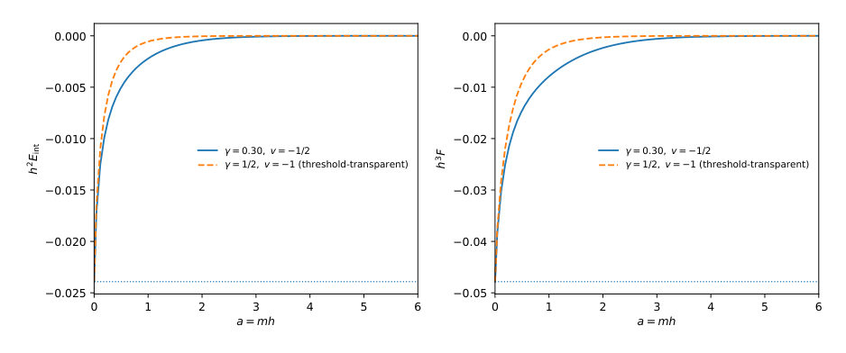
<figcaption class="paper-figure-caption"><b>Fig 1.</b> Figure 1: Numerical evaluation of the pole-free flip-symmetric family. Left: h2Eint as a function of a = mh. Right: h3F. The solid curve is the generic point (γ, v) = (0.30, −1/2) and the dashed curve is the threshold-transparent point (1/2, −1). The horizontal dotted lines are the one-channel Maxwell limits −ζ(3)/(16π) and −ζ(3)/(8π), respectively.</figcaption>
</figure>
<figure class="paper-figure-card">
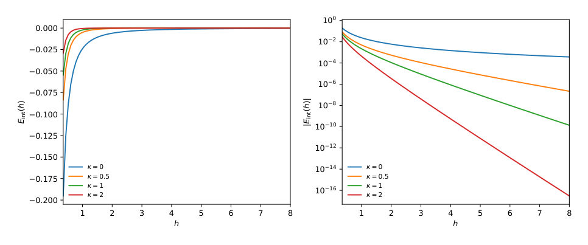
<figcaption class="paper-figure-caption"><b>Fig 2.</b> Figure 2: Unrescaled interaction energy for g2 = 1 and (γ, v) = (0.30, −1/2), with κ = 0, 0.5, 1, 2. Left: Eint(h). Right: |Eint(h)| on a logarithmic scale. All curves have the same short-distance coefficient −ζ(3)/(16πh2); the nonzero-κ curves are Yukawa screened at large separation.</figcaption>
</figure>
</div>

<p><strong>Summary.</strong> This paper analyzes the Casimir interaction and edge physics in Maxwell--Chern-Simons theory on a finite strip. Using advanced field theory techniques, it derives that the vacuum energy exhibits distinct asymptotic behaviors depending on whether the topological mass term (from the Chern-Simons part) is zero or non-zero. This work provides a rigorous framework for understanding how boundary topology modifies bulk quantum interactions.</p>
<p><strong>Why it may be interesting.</strong> While focused on gauge theory, the explicit calculation of vacuum energy (Casimir effect) in a confined geometry provides a concrete example of how topological terms modify standard QFT results, which is relevant for understanding boundary effects in quantum systems.</p>
<details>
<summary>Detailed structure</summary>
<p><strong>Main problem.</strong> The study investigates edge physics and the resulting Casimir interaction within Maxwell--Chern-Simons (MCS) theory defined on a strip geometry.</p>
<p><strong>Main result.</strong> The analysis derives a closed determinant representation for the finite vacuum interaction energy, showing that the force transitions from a power-law decay in the pure Maxwell limit to an exponentially screened Yukawa potential when topological mass is present.</p>
<p><strong>Method.</strong> The authors employ the Symanzik framework for quantum field theory with boundaries, deriving boundary conditions via variational principles and analyzing the resulting scattering determinant structure.</p>
<p><strong>Model / system.</strong> The system is MCS theory on a strip $\mathbb{R}_{1,1} 	imes [0, h]$, characterized by both Maxwell and Chern-Simons terms. The bulk supports one massive physical helicity, while boundary physics involves two coupled $U(1)$ current algebras.</p>
<p><strong>Key observables.</strong> The Casimir interaction energy ($E_{	ext{int}}$), reflection coefficients, and the structure of the secular determinant governing vacuum fluctuations.</p>
<p><strong>Important parameters / regimes.</strong> Strip width ($h$), Chern-Simons coupling ($\kappa$), and the resulting topological mass ($m = \kappa g^2$).</p>
<p><strong>Assumptions / limitations.</strong> The analysis relies on retaining terms up to one tangential derivative in the boundary functional and assumes a specific 'edge-active' choice for boundary conditions.</p>
<p><strong>Paper structure.</strong> The paper follows a structured derivation: establishing boundary equations from local functionals, deriving conserved currents via Ward identities, reducing the problem to physical modes, and finally calculating the interaction energy using scattering determinants.</p>
</details>
<details>
<summary>Abstract</summary>
<p>We study Maxwell--Chern--Simons theories on a strip $\mathcal M=\mathbb R^{1,1}\times[0,h]$ within the Symanzik framework for quantum field theory with boundaries. We add the most general local boundary functional within the quadratic one-tangential-derivative truncation adopted throughout the paper and derive the admissible boundary conditions from locality and the variational principle, with gauge symmetry implemented through boundary Ward identities. The strip supports two boundary $U(1)$ current algebras, with opposite levels fixed by the Chern--Simons coupling $κ$ and by boundary orientation, while edge velocities depend on local boundary couplings. They are equal and opposite on the flip-symmetric branch, which is the natural choice for a spatially symmetric strip. The same boundary data determine the reflection coefficients for bulk modes and yield a closed determinant (scattering) representation of the finite interaction energy. In the Maxwell limit ($κ=0$) the inter-edge interaction is long-ranged and produces a power-law Casimir force, whereas in Maxwell--Chern--Simons theory the topological mass $m=κg^2$ generates Yukawa suppression at large separations $mh\gg1$. The determinant form also gives analytic control of the asymptotic regimes and separates topological boundary data (levels and anomaly inflow) from dynamical bulk effects (dispersion, boundary mixing and Casimir interaction).</p>
</details>
<p><sub><a href="#top">↑ back to top</a></sub></p>

<p><a id="paper-2608.12765"></a></p>
<h3 id="a-unified-description-of-electron-phonon-coupling-and-ion-migration-in-metal-halide-perovskites"><a href="http://arxiv.org/abs/2608.12765v1">A Unified Description of Electron-Phonon Coupling and Ion Migration in Metal Halide Perovskites</a></h3>
<p><strong>Authors:</strong> Bo Cai, Yan Yang, Yoshiki Sugai, Maddison Wiles, Dongxu He, Yang Yang, Junmin Xia, Shufen Chen, Carla Verdi, Siyu Chen, Nan Zhang, Ming-Gang Ju, Chao Liang, Julian A. Steele<br>
<strong>Type:</strong> theory · <strong>Category:</strong> other · <strong>PDF:</strong> <a href="https://arxiv.org/pdf/2608.12765v1">https://arxiv.org/pdf/2608.12765v1</a><br>
<strong>Analysis basis:</strong> full PDF text, analyzed in chunks
<strong>Topic relevance:</strong> <code>Keldysh / 2PI / non-Gaussian methods</code> <strong>3/5</strong> · <code>analog quantum simulation</code> <strong>2/5</strong> · <code>driven-dissipative phase transition</code> <strong>2/5</strong> · <code>methods for driven-dissipative</code> <strong>2/5</strong> · <code>correlated / nonlocal dissipation</code> <strong>1/5</strong> · <code>non-equilibrium universality</code> <strong>1/5</strong> · <code>quantum measurements</code> <strong>1/5</strong></p>
<div class="figure-strip-hint">↔ Scroll figures horizontally</div>
<div class="paper-figures-scroll">
<figure class="paper-figure-card">
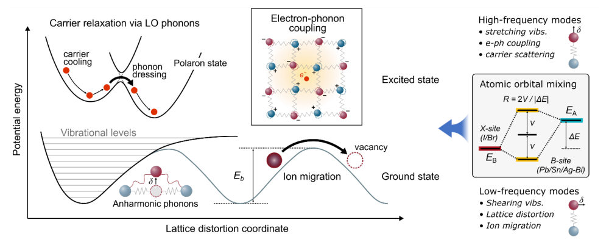
<figcaption class="paper-figure-caption"><b>Fig 1.</b> Fig. 1 | Unified conceptual framework for electron–phonon coupling and ion migration.</figcaption>
</figure>
<figure class="paper-figure-card">
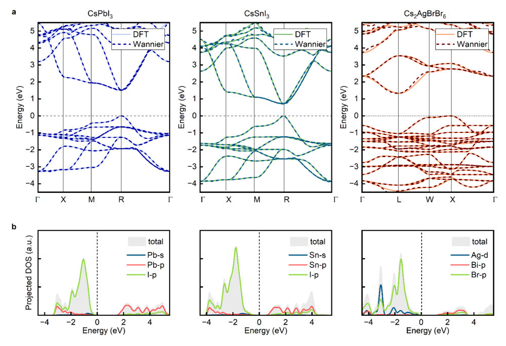
<figcaption class="paper-figure-caption"><b>Fig 2.</b> Fig. 2 | Electronic structures of representative halide perovskites. a, Electronic band structures of CsPbI3, CsSnI3 and Cs2AgBiBr6 calculated using density functional theory (solid lines) and Wannier interpolation (dashed lines). b, Corresponding projected densities of states</figcaption>
</figure>
<figure class="paper-figure-card">
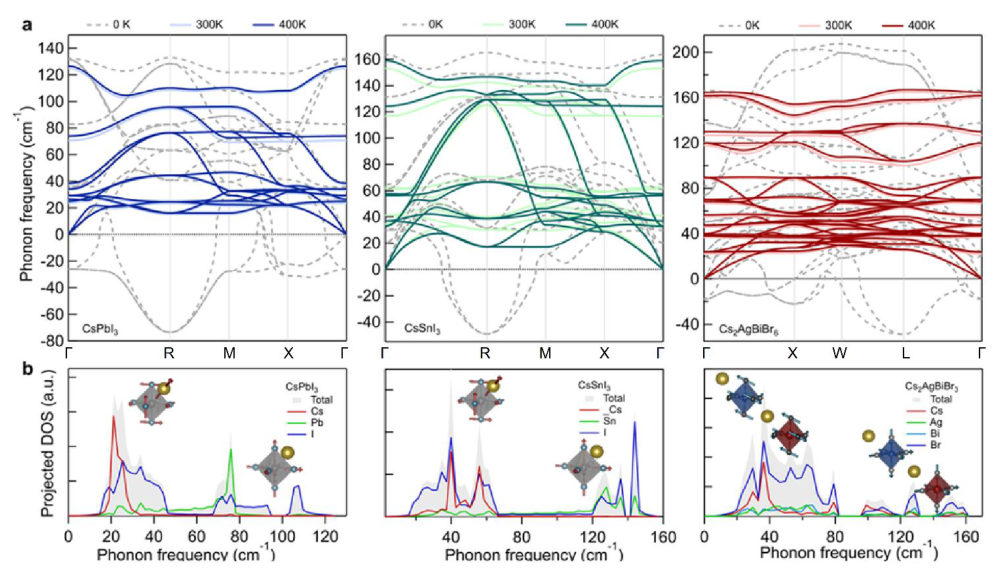
<figcaption class="paper-figure-caption"><b>Fig 3.</b> Fig. 3 | Anharmonic lattice dynamics in representative halide perovskites. a, Temperature- dependent phonon dispersions of CsPbI3, CsSnI3 and Cs2AgBiBr6 at 0 K (black dashed lines), 300 K (blue solid lines) and 400 K (red solid lines), highlighting the anharmonic renormalization of the phonon spectra. b, Corresponding phonon projected densities of states (PDOS) at 300 K.</figcaption>
</figure>
<figure class="paper-figure-card">
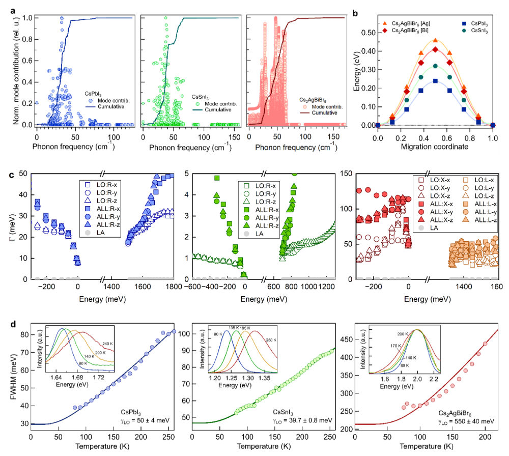
<figcaption class="paper-figure-caption"><b>Fig 4.</b> Fig. 4 | Phonon-mode-resolved ion migration and electron–phonon coupling in halide perovskites. a, Scatter plots and cumulative contribution plots of halogen migration contributions from different phonon modes (including all q-space phonons) in CsPbI3, CsSnI3, and Cs2AgBiBr6. b, Calculated migration barriers of different halogen atoms in these compositions. c, Electron–phonon interaction induced energy-dependent electronic linewidths (Γe-ph) at the lowest conduction band (LCB) and the highest valence band (HVB). The energy is referenced to the matching band edge. Filled symbols represent the total linewidth, open symbols denote the polar longitudinal optical (LO) phonon contribution to the...</figcaption>
</figure>
</div>

<p><strong>Summary.</strong> This work unifies the seemingly separate phenomena of ion migration and electron-phonon coupling in metal halide perovskites using an orbital hybridization descriptor, $R$. By showing that both processes are governed by the same underlying electronic structure parameter, the authors propose a generalized mechanism for designing soft semiconductors with optimized charge and ionic transport simultaneously.</p>
<p><strong>Why it may be interesting.</strong> While not directly focused on quantum information, the rigorous theoretical coupling of lattice vibrations (phonons) to electronic structure parameters ($R$) provides a powerful model for understanding strongly coupled open quantum systems where environment interaction dictates transport properties.</p>
<details>
<summary>Detailed structure</summary>
<p><strong>Main problem.</strong> The research aims to develop a unified microscopic description linking lattice dynamics, electron-phonon coupling (EPC), and ion migration in metal halide perovskites.</p>
<p><strong>Main result.</strong> A single orbital hybridization descriptor ($R$) was introduced to show that both ionic transport barriers and EPC strengths arise from the same underlying electronic structure framework. This suggests a cooperative mechanism for optimizing charge and ionic transport simultaneously.</p>
<p><strong>Method.</strong> The study employs Density Functional Theory (DFT) calculations, utilizing an orbital hybridization descriptor derived from a dual-atom model to quantify how lattice displacements modulate electronic coupling.</p>
<p><strong>Model / system.</strong> The physical system is Metal Halide Perovskites ($  ext{CsPbI}_3$, $    ext{CsSnI}_3$, and double perovskites). The theoretical framework uses an orbital hybridization descriptor $R = 2V / |\Delta E|$ to model the coupling between metal and halide orbitals.</p>
<p><strong>Key observables.</strong> Electron-phonon coupling strength ($\Gamma_{e-	ext{ph}}$), ion migration barrier energies ($E_b$), and the orbital hybridization descriptor ($R$).</p>
<p><strong>Important parameters / regimes.</strong> The relative values of $R$ across different perovskite compositions (e.g., $    ext{Cs}_2   ext{AgBiBr}_6 &gt;     ext{Sn-I} &gt;     ext{Pb-I}$), and the dependence of $R$ on specific phonon modes (stretching vs. shearing).</p>
<p><strong>Assumptions / limitations.</strong> The analysis assumes that the descriptor $R$ acts as a universal electronic parameter governing both lattice restoring forces (migration) and dielectric screening (EPC). Calculations are often performed on archetypal cubic phases.</p>
<p><strong>Figures summary.</strong> Figures conceptually link the hybridization descriptor $R$ to phonon modes: low-frequency shearing modes govern ion migration, while high-frequency stretching modes govern carrier scattering via the Fröhlich interaction. Supplementary figures detail how $R$ changes under specific atomic displacements (shortening/elongating bonds).</p>
<p><strong>Paper structure.</strong> The paper establishes a conceptual framework linking bonding to dynamics using $R$. It then systematically calculates and analyzes how perturbing bond lengths or angles modulates $R$, which in turn dictates both the ion migration barrier and the EPC strength across multiple perovskite types.</p>
</details>
<details>
<summary>Abstract</summary>
<p>The remarkable optoelectronic properties of metal halide perovskites are closely linked to their unusually soft and polar chemical bonds that enable both strong electron-phonon interactions and ion migration. Yet these two defining characteristics have largely been treated as independent consequences of the same underlying chemical bonding. Here we show that they originate from a common electronic-structure framework by developing a general description linking lattice dynamics, electron-phonon coupling, and halide ion migration across representative Pb-based, Sn-based, and double perovskites. Spectrally resolved phonon-mode contributions demonstrate that the low-frequency shearing modes dominate halide migration, whereas high-frequency stretching modes govern carrier scattering through the Fröhlich interaction in all three compositions. We introduce an orbital hybridization descriptor to unify these findings, which connects metal-halide bonding characteristics with the migration barrier energies and Fröhlich coupling strengths, indicating a cooperative evolution of these two properties. These findings provide a generalized microscopic mechanism for simultaneously optimizing charge and ionic transport in soft semiconductors.</p>
</details>
<p><sub><a href="#top">↑ back to top</a></sub></p>

<p><a id="paper-2608.12729"></a></p>
<h3 id="asymmetric-textured-image-sensors-based-on-antenna-theory-as-designed-by-nature"><a href="http://arxiv.org/abs/2608.12729v1">Asymmetric Textured Image Sensors Based on Antenna Theory as Designed by Nature</a></h3>
<p><strong>Authors:</strong> Julian Juhi-Lian Ting<br>
<strong>Type:</strong> theory · <strong>Category:</strong> other · <strong>PDF:</strong> <a href="https://arxiv.org/pdf/2608.12729v1">https://arxiv.org/pdf/2608.12729v1</a><br>
<strong>Analysis basis:</strong> full PDF text, analyzed in chunks
<strong>Topic relevance:</strong> <code>interference shaping light</code> <strong>3/5</strong> · <code>driven-dissipative phase transition</code> <strong>2/5</strong> · <code>methods for driven-dissipative</code> <strong>2/5</strong> · <code>Keldysh / 2PI / non-Gaussian methods</code> <strong>1/5</strong> · <code>analog quantum simulation</code> <strong>1/5</strong> · <code>correlated / nonlocal dissipation</code> <strong>1/5</strong> · <code>non-equilibrium universality</code> <strong>1/5</strong> · <code>quantum measurements</code> <strong>1/5</strong></p>
<div class="figure-strip-hint">↔ Scroll figures horizontally</div>
<div class="paper-figures-scroll">
<figure class="paper-figure-card">
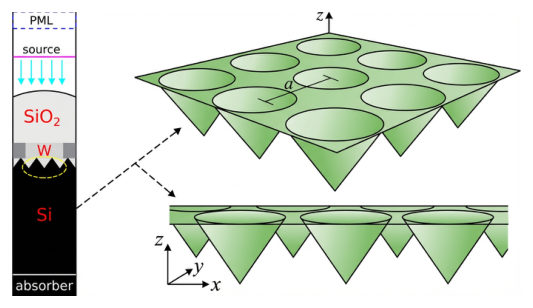
<figcaption class="paper-figure-caption"><b>Fig 1.</b> FIG. 1. The geometry used in MEEP Project 4 for calculating the CMOS image sensor [20]. A silicon dioxide glass microlens with a 0.85µm radius of curvature is atop the image sensor to focus incident light into individual pixels. Surrounding each pixel is a metal aperture grid composed of tungsten wire (0.1µm wide and 0.2µm high), which sits on a 3 µm thick crystalline-silicon substrate. Furthermore, deep-trench isolation-implemented as a 0.1µm wide and 2µm thick silicon-dioxide trench-surrounds the pixel to mitigate electrical crosstalk and trap photons via index guiding.</figcaption>
</figure>
<figure class="paper-figure-card">
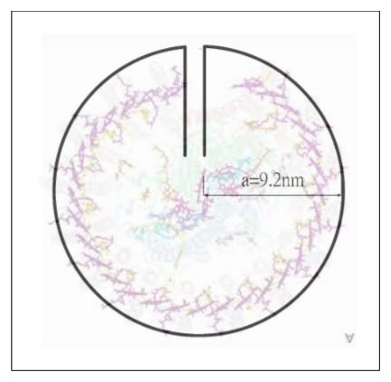
<figcaption class="paper-figure-caption"><b>Fig 2.</b> FIG. 2. According to experimental data, the major axis of Rhodopseudomonas palustris has length 110 ˚A and the minor axis is 95 ˚A; the largest dimension of the inner LH1 is 78 ˚A [22]. The elliptical symmetry is visualized by superimposing our model onto the schematic representation based on X-ray data.</figcaption>
</figure>
<figure class="paper-figure-card">
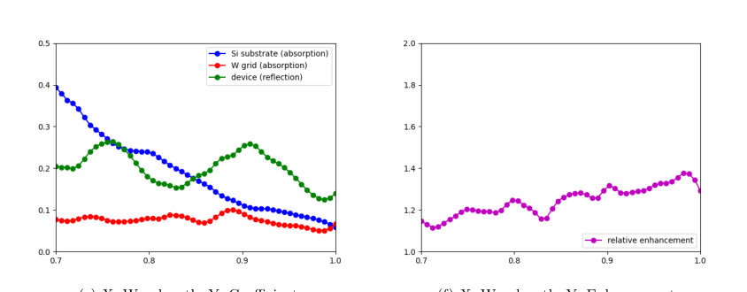
<figcaption class="paper-figure-caption"><b>Fig 3.</b> FIG. 3. (a)-(b) Original circular cone from MEEP project 4, (c)-(d) modified circular cone, and (e)-(f) proposed asymmetric elliptical cone. For all subfigures, the horizontal (X) axis represents the optical wavelength ranging from 0.7 to 1.0 µm. The vertical (Y) axis represents the absolute coefficient value (absorption and reflection) for the left column [subfigures (a), (c), (e)] and the relative enhancement factor for the right column [subfigures (b), (d), (f)].</figcaption>
</figure>
<figure class="paper-figure-card">
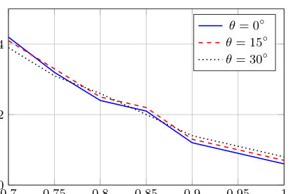
<figcaption class="paper-figure-caption"><b>Fig 4.</b> FIG. 4. Calculated silicon substrate optical absorption curves under oblique incident illumination (θ = 0◦, 15◦, 30◦) for the asymmetric elliptical base cone texture array.</figcaption>
</figure>
</div>

<p><strong>Summary.</strong> This paper explores inducing passive non-reciprocal scattering in textured image sensors by introducing structural asymmetry at sub-wavelength scales. Using antenna theory and FDTD simulations, the authors find that while theory predicts significant enhancement, actual measurements show this effect is suppressed by field concentration at sharp apices. Future designs must focus on asymmetric modifications directly at these high-field regions.</p>
<p><strong>Why it may be interesting.</strong> Although focused on classical optics/photonics, the investigation into symmetry breaking to induce non-reciprocity at nanoscale boundaries touches upon concepts relevant to topological photonics or engineered quantum light-matter interactions where boundary conditions are paramount.</p>
<details>
<summary>Detailed structure</summary>
<p><strong>Main problem.</strong> The work investigates whether structural asymmetry at sub-wavelength scales can induce passive non-reciprocal scattering in linear, time-invariant systems, moving beyond traditional macroscopic continuum assumptions.</p>
<p><strong>Main result.</strong> While theory predicts a potential 5%-15% efficiency enhancement via symmetry breaking, numerical simulations reveal that intense local field concentration at the apex shields this effect, suggesting asymmetry must be engineered directly at the field-concentrating point to observe non-reciprocity.</p>
<p><strong>Method.</strong> The study combines theoretical development using perturbation theory with detailed numerical simulations performed on the MEEP finite-difference time-domain (FDTD) platform.</p>
<p><strong>Model / system.</strong> The physical system is a CMOS image sensor modified with an asymmetrically textured surface, inspired by bacterial photosynthetic light harvesters. The model analyzes wave scattering properties at the sub-wavelength scale using antenna theory principles.</p>
<p><strong>Key observables.</strong> Non-reciprocal susceptibility ($\chi^{(2)}$), DC current ($\langle J(t) 
angle$), and relative change in average optical absorption (measured via FDTD flux data).</p>
<p><strong>Important parameters / regimes.</strong> Sub-wavelength scales, eccentricity parameter ($\delta \approx 13.6\%$), and incidence angles ($    heta = 0^\circ$ to $30^\circ$).</p>
<p><strong>Assumptions / limitations.</strong> The analysis assumes that macroscopic continuum models are invalid at the sub-wavelength scale, and that geometric configuration dictates the electromagnetic response.</p>
<p><strong>Figures summary.</strong> Figures compare absorption performance for circular versus elliptical cone shapes across different lattice spacings and show optical absorption curves under oblique illumination angles ($    heta = 0^\circ$ to $30^\circ$).</p>
<p><strong>Paper structure.</strong> The paper progresses from establishing the theoretical framework based on bio-inspiration and perturbation theory, through numerical validation using MEEP/FDTD simulations comparing various geometries (circular vs. elliptical), culminating in a discussion of the discrepancy between predicted enhancement and measured results.</p>
</details>
<details>
<summary>Abstract</summary>
<p>This work numerically validates the application of bio-inspired concepts on CMOS derived from bacterial photosynthetic light harvesters. We investigate a modification of symmetric inverted pyramid array CMOS image sensors into an asymmetrically shaped texture to explore the structural boundary of passive non-reciprocity. Diverging from traditional macroscopic continuum assumptions, we analyze whether structural asymmetry at sub-wavelength scales can induce non-reciprocal scattering under passive, linear, and time-invariant conditions. A theoretical framework based on perturbation theory is developed, estimating a potential efficiency enhancement of 5\% to 15\%. Numerical simulations performed via the MEEP finite-difference time-domain (FDTD) platform reveal that the linear response is highly localized, showing a subtle 0.02\% change. This suggests that macroscopic Lorentz reciprocity remains robust at the investigated scale due to apex field concentration, defining a clear geometric threshold for microscopic non-reciprocity.</p>
</details>
<p><sub><a href="#top">↑ back to top</a></sub></p>

<p><a id="paper-2608.13062"></a></p>
<h3 id="emergence-of-moire-magnetic-chaos-in-twisted-bilayer-cri3"><a href="http://arxiv.org/abs/2608.13062v1">Emergence of moiré magnetic chaos in twisted bilayer CrI3</a></h3>
<p><strong>Authors:</strong> Gyuyoung Park, OukJae Lee, Kyoung-Min Kim<br>
<strong>Type:</strong> theory · <strong>Category:</strong> other · <strong>PDF:</strong> <a href="https://arxiv.org/pdf/2608.13062v1">https://arxiv.org/pdf/2608.13062v1</a><br>
<strong>Analysis basis:</strong> full PDF text, analyzed in chunks
<strong>Topic relevance:</strong> <code>non-equilibrium universality</code> <strong>3/5</strong> · <code>analog quantum simulation</code> <strong>2/5</strong> · <code>driven-dissipative phase transition</code> <strong>2/5</strong> · <code>Frenkel-Kontorova</code> <strong>1/5</strong> · <code>methods for driven-dissipative</code> <strong>1/5</strong> · <code>scars &amp; prethermalization</code> <strong>1/5</strong></p>
<div class="figure-strip-hint">↔ Scroll figures horizontally</div>
<div class="paper-figures-scroll">
<figure class="paper-figure-card">
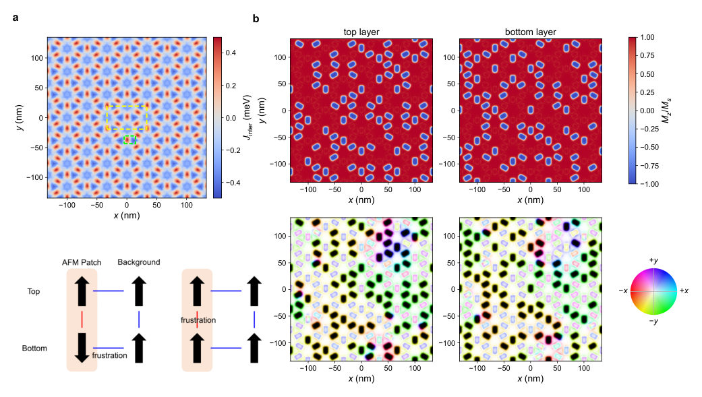
<figcaption class="paper-figure-caption"><b>Fig 1.</b> FIG. 1. Moir´e magnetic textures in twisted bilayer CrI3. a, Interlayer exchange coupling map Jinter(r) used in the simulations, tiled across the moir´e superlattice. Blue (red) marks ferromagnetic (antiferromagnetic) coupling, Jinter &lt; 0 (Jinter &gt; 0). The yellow dashed box outlines one moir´e unit cell at the centre of the map; the small green dashed box just below it isolates a single AFM patch (red) next to the surrounding FM background (blue). b, A representative metastable configuration obtained by relaxing a random initial state (a uniformly out-of-plane-polarised background carrying random in-plane fluctuations; see Methods). This configuration is the unperturbed (ε = 0) reference...</figcaption>
</figure>
<figure class="paper-figure-card">

<figcaption class="paper-figure-caption"><b>Fig 2.</b> FIG. 2. Damage spreading and structural chaos. a, Spatial map of the signed top-layer magnetization difference ∆Mz(r)/Ms = M pert z −M ref z between a perturbed and the reference trajectory at t = 2 ns, for the smallest perturbation ε = 10−8. Red and blue mark domains that have flipped relative to the reference, with the sign giving the flip direction; white marks the remaining unchanged region (Hamming fraction H/Nd = 0.49, where Nd = 89 is the number of reference domains). Yellow circles mark the pinned domains that stay locked to the reference for every ε in the sweep. b, The same map for the largest perturbation ε = 10−3 (H/Nd = 0.46). The decorrelation pattern is fully reorganised, yet...</figcaption>
</figure>
<figure class="paper-figure-card">
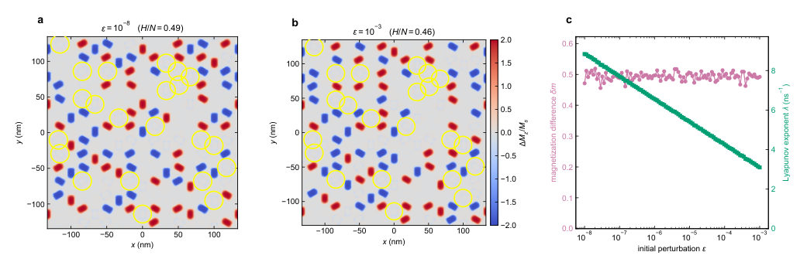
<figcaption class="paper-figure-caption"><b>Fig 3.</b> Figure 2a,b maps the local magnetization difference |∆m(r)| between a perturbed and the reference trajectory at t = 2 ns. Even at ε = 10−8, a single-spin tilt of less than 10−6 degrees, about half of the reference domains have reversed their binary state, giving a Hamming fraction H/Nd = 0.49, where H counts the domains whose state differs between the perturbed and reference trajectories and Nd = 89 is the total number of reference domains (a subset of the N = 157 AFM patches). The value H/Nd = 0.5 is the maximal-decorrelation limit: two statistically independent binary configurations differ, on average, in exactly half of their bits, so reaching it under an infinitesimal perturbation means...</figcaption>
</figure>
<figure class="paper-figure-card">
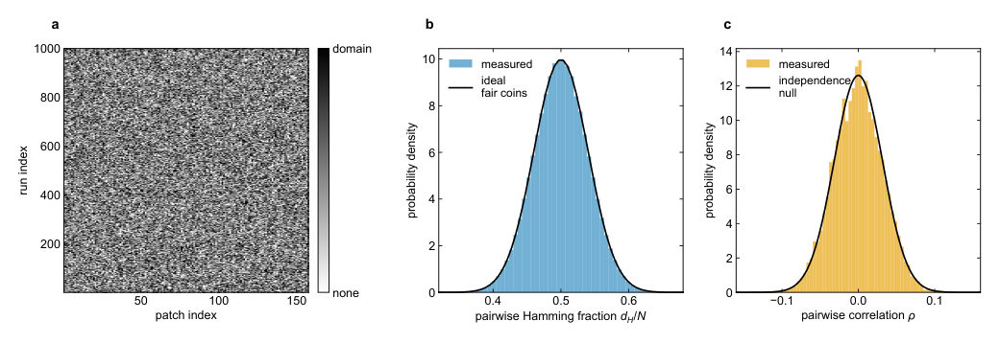
<figcaption class="paper-figure-caption"><b>Fig 4.</b> FIG. 3. Random, uncorrelated bits from deterministic dynamics. a, Raw ensemble raster. Each of the 1000 rows is the 157-bit string produced by one deterministic relaxation from a random initial state (black, a reversed domain forms at that AFM patch; white, none). The raster is visually indistinguishable from random noise. b, Distribution of the pairwise Hamming fraction dH/N over all pairs of runs (bars) versus that of N ideal fair coins, Bin(N, 1/2) (line). The two coincide (measured mean and standard deviation 0.500 and 0.040 versus ideal 0.500 and 0.040), so any two runs differ in half of their patches. c, Distribution of the Pearson correlation coefficient ρ over all 12,246 patch pairs...</figcaption>
</figure>
<figure class="paper-figure-card">
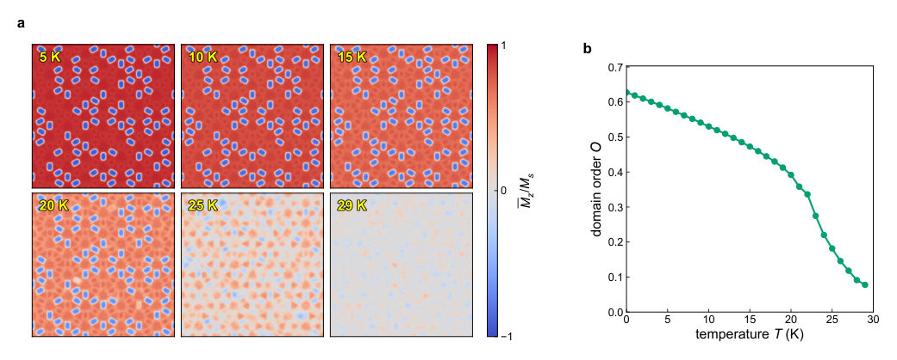
<figcaption class="paper-figure-caption"><b>Fig 5.</b> FIG. 4. Thermal robustness and melting of the chaotically selected moir´e domain pattern. a, Time-averaged top- layer magnetization M z/Ms [Eq. (6)], averaged over the steady-state window t ∈[1, 2] ns after discarding the ∼1 ns nucleation transient, at representative temperatures T = 5, 10, 15, 20, 25, and 29 K, obtained by heating a single chaotically selected configuration from T = 0. The reversed domains (mz ≈−1, blue) remain sharply resolved up to ∼20 K and progressively dissolve into the ferromagnetic background (mz ≈+1, red) at higher temperature. b, Domain order O versus temperature. O stays close to its T = 0 value (≈0.63) below ∼10 K, where the chaotically selected pattern is...</figcaption>
</figure>
</div>

<p><strong>Summary.</strong> This work investigates 'moiré magnetic chaos' in twisted bilayer CrI3, demonstrating that the inherent interlayer exchange frustration generates chaotic dynamics without external driving. Using micromagnetic simulations, the authors quantify this chaos via Lyapunov exponents and analyze the resulting domain patterns, showing they are statistically random yet governed by underlying topological constraints.</p>
<p><strong>Why it may be interesting.</strong> The study bridges concepts from nonlinear dynamics (chaos theory) into condensed matter magnetism, providing a concrete physical realization of autonomous chaos in a solid-state system, which is highly relevant for understanding complex magnetic switching and memory effects.</p>
<details>
<summary>Detailed structure</summary>
<p><strong>Main problem.</strong> To demonstrate a new type of magnetic chaos, termed 'moiré magnetic chaos,' arising from mesoscopic domain variables in twisted bilayer CrI3 without external driving.</p>
<p><strong>Main result.</strong> The system exhibits intrinsic, undriven chaos characterized by extreme sensitivity to initial conditions and stochastic domain configurations due to interlayer exchange frustration. This identifies a microscopic mechanism for nonlinear magnetism beyond conventional driven regimes.</p>
<p><strong>Method.</strong> Micromagnetic simulations are used extensively, employing techniques like calculating finite-time Lyapunov exponents, analyzing damage spreading from perturbations, and performing statistical ensemble characterization.</p>
<p><strong>Model / system.</strong> The system is twisted bilayer CrI3, modeled by a Heisenberg spin Hamiltonian incorporating interlayer exchange coupling ($J_{	ext{inter}}$). The moiré superlattice structure creates regions of frustration (AFM patches) that provide multiple dynamical degrees of freedom necessary for autonomous chaos.</p>
<p><strong>Key observables.</strong> Finite-time Lyapunov exponents ($\lambda$), Hamming Fraction ($H/N_d$), Shannon entropy ($\langle H_n 
angle$), and topological charge ($Q$) of reversed domains.</p>
<p><strong>Important parameters / regimes.</strong> Twist angle ($  heta = 1.61^\circ$); characteristic energy gap $\Delta E/|E| \approx 1.8 	imes 10^{-4}$; Lyapunov exponent scales (e.g., $9 	ext{ ns}^{-1}$ vs. $290.8 	ext{ ns}^{-1}$).</p>
<p><strong>Assumptions / limitations.</strong> The analysis assumes weak coupling between neighboring AFM patches, allowing for quasi-independent polarization selection in each patch; the chaotic behavior is understood as transient sensitivity rather than sustained attractor dynamics.</p>
<p><strong>Figures summary.</strong> Figures illustrate interlayer exchange maps showing FM/AFM patterns (Fig. 1a), representative metastable domain configurations (Fig. 1b), damage spreading evolution ($\delta m(t)$) confirming chaos, and topological charge distributions classifying domains as skyrmion-like or bubble-like.</p>
<p><strong>Paper structure.</strong> The paper progresses from establishing the physical platform (twisted CrI3) and the mechanism for frustration to quantifying chaos using Lyapunov exponents and perturbation analysis. It then characterizes the resulting domain states statistically (entropy, correlations) and topologically (skyrmions vs. bubbles), concluding with a refined understanding of transient versus sustained chaotic dynamics.</p>
</details>
<details>
<summary>Abstract</summary>
<p>The study of magnetic chaos has traditionally focused on macroscopic variables under external driving. Here we demonstrate a new type of magnetic chaos, termed moiré magnetic chaos, associated with mesoscopic magnetic domain variables in twisted bilayer CrI3 without external driving. The domains are stabilized by a characteristic interlayer exchange frustration, which supplies the multiple dynamical degrees of freedom required for autonomous chaos. Through micromagnetic simulations, we show that relaxation toward moiré magnetic textures is extremely sensitive to minute local perturbations of the initial state, characterized by substantial finite-time Lyapunov exponents and a final-state sensitivity that persists over five decades of perturbation amplitude. Statistical analysis further reveals that the resulting domain configurations are stochastic and pairwise uncorrelated. Our results identify a form of microscopic, undriven chaos in twisted magnets that extends nonlinear magnetism beyond the conventional driven regime.</p>
</details>
<p><sub><a href="#top">↑ back to top</a></sub></p>

<p><a id="paper-2608.13066"></a></p>
<h3 id="adiabatic-perturbation-theory-of-energy-transfer-and-charge-transport-in-condensed-matter"><a href="http://arxiv.org/abs/2608.13066v1">Adiabatic perturbation theory of energy transfer and charge transport in condensed matter</a></h3>
<p><strong>Authors:</strong> Ryan Requist, Fran Dabo<br>
<strong>Type:</strong> theory · <strong>Category:</strong> other · <strong>PDF:</strong> <a href="https://arxiv.org/pdf/2608.13066v1">https://arxiv.org/pdf/2608.13066v1</a><br>
<strong>Analysis basis:</strong> full PDF text, analyzed in chunks
<strong>Topic relevance:</strong> <code>Keldysh / 2PI / non-Gaussian methods</code> <strong>3/5</strong> · <code>methods for driven-dissipative</code> <strong>3/5</strong> · <code>correlated / nonlocal dissipation</code> <strong>1/5</strong> · <code>quantum measurements</code> <strong>1/5</strong></p>
<div class="figure-strip-hint">↔ Scroll figures horizontally</div>
<div class="paper-figures-scroll">
<figure class="paper-figure-card">
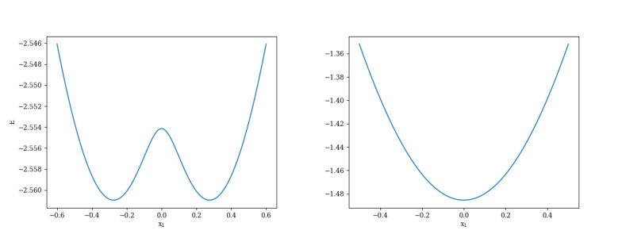
<figcaption class="paper-figure-caption"><b>Fig 1.</b> FIG. 1. Ground state potential energy surfaces along coordinate x1 for systems with Ne = 4 and Ne = 6 electrons. (a) For Ne = 4, N = 4, and z = 1.1 the potential energy surface has a maximum at the high symmetry point and two degenerate minima corresponding to dimerized configurations. (b) For Ne = 6, N = 4, and z = 1.5, the potential energy surface has a single minimum at the high symmetry point. The other parameters are kmax = 8 and ϵ = 1/2000.</figcaption>
</figure>
<figure class="paper-figure-card">
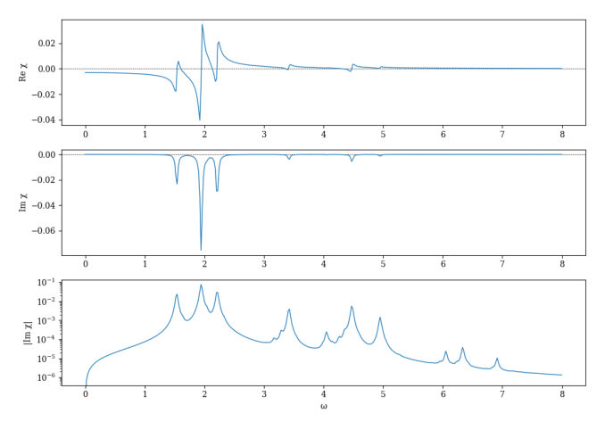
<figcaption class="paper-figure-caption"><b>Fig 2.</b> FIG. 2. The frequency dependence of the response function χjpjp(ω) with η = 0.02 for the model of Sec. V with 6 electrons and 4 ions and parameters kmax = νmax = 3, ϵ = 1/2000 and z = 1.5.</figcaption>
</figure>
<figure class="paper-figure-card">
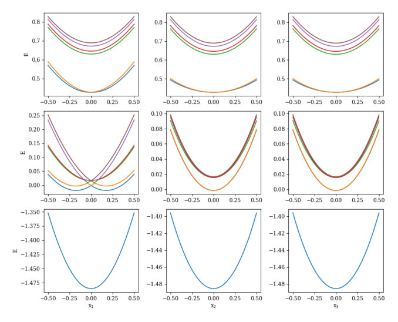
<figcaption class="paper-figure-caption"><b>Fig 3.</b> FIG. 3. The first 14 potential energy surfaces for the model of Sec. V with 6 electrons and 4 ions as functions of the ionic vibrational coordinates; parameters kmax = 8, ϵ = 1/2000 and z = 1.5.</figcaption>
</figure>
<figure class="paper-figure-card">
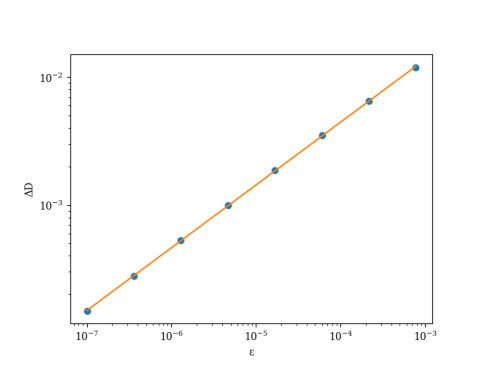
<figcaption class="paper-figure-caption"><b>Fig 4.</b> FIG. 4. The difference of Drude weights for the full electron-ion system and for the electron-only system. Drude weights were calculated using Kohn’s formula for the model of Sec. V with six electrons and four ions and parameters kmax = νmax = 3 and z = 1.5. The figure shows the error caused by neglecting the ionic degrees of freedom. The linear fit to the data is −0.89 + 0.49 ln ϵ.</figcaption>
</figure>
</div>

<p><strong>Summary.</strong> This paper introduces Adiabatic Perturbation Theory (APT) to accurately model energy and charge transfer in electron-ion systems. It systematically derives corrections beyond the standard Born-Oppenheimer approximation by treating the small parameter $\epsilon$ (electron-to-nucleus mass ratio) perturbatively. The resulting framework allows for calculating advanced transport properties like nonadiabatic conductivity with controlled accuracy.</p>
<p><strong>Why it may be interesting.</strong> This work provides rigorous, high-order theoretical tools for treating nonadiabatic coupling effects in condensed matter systems, which is crucial for understanding energy and charge flow where electronic and nuclear motions are strongly coupled.</p>
<details>
<summary>Detailed structure</summary>
<p><strong>Main problem.</strong> The core problem is quantifying energy transfer and charge transport in condensed matter systems with controlled accuracy concerning the adiabatic small parameter ($\epsilon$, the electron-to-nucleus mass ratio). This requires going beyond standard approximations like the harmonic approximation.</p>
<p><strong>Main result.</strong> The authors develop Adiabatic Perturbation Theory (APT) to systematically derive effective Hamiltonians and calculate nonadiabatic corrections to transport properties, such as frequency-dependent conductivity and Drude weight, to any desired order in $\epsilon$.</p>
<p><strong>Method.</strong> The primary method is Adiabatic Perturbation Theory (APT), which treats the electron-ion Schrödinger equation as a singularly perturbed differential equation in $\epsilon$ by employing near-identity unitary transformations to decouple electronic and nuclear degrees of freedom.</p>
<p><strong>Model / system.</strong> The model is an electron-ion system described by a full nonrelativistic Hamiltonian. The theory analyzes how coupling between fast electronic motion and slow, heavy ionic motion (nuclei) affects transport properties.</p>
<p><strong>Key observables.</strong> Rate of change of the nuclear kinetic energy (energy transfer formula), nonadiabatic frequency-dependent conductivity, and Drude weight.</p>
<p><strong>Important parameters / regimes.</strong> The adiabatic small parameter $\epsilon$ (electron-to-nucleus mass ratio); the bare nuclear mass tensor $M_0$.</p>
<p><strong>Assumptions / limitations.</strong> The theory systematically improves upon approximations by controlling errors in powers of $\epsilon$, avoiding assumptions inherent to the harmonic approximation or standard Born-Oppenheimer treatments.</p>
<p><strong>Paper structure.</strong> The paper builds from identifying the failure points of simpler models (like the Harmonic Approximation) to introducing APT as a systematic, order-by-order expansion in $\epsilon$ via unitary transformations to derive an effective Hamiltonian for transport calculations.</p>
</details>
<details>
<summary>Abstract</summary>
<p>Energy and charge transfer in condensed matter systems are often described in terms of quasiparticles. The order of accuracy of the results in terms of the electron-to-nucleus mass ratio $ε$, an adiabatic small parameter, is usually not known. To quantify energy transfer with controlled accuracy in $ε$, we use adiabatic perturbation theory to derive a formula for the rate of change of the nuclear kinetic energy. Applying a sequence of near-identity unitary transformations decouples the electronic and nuclear degrees of freedom to higher and higher order and produces an effective Hamiltonian. In the special case that the nuclei are treated classically, the energy transfer formula reduces to the usual formula for the rate of work done on a classical particle but the mass of the particle is enhanced by the factor $M_0^{-1}(M_0+εM_1)$, where $M_1$ is a nonadiabatic correction to the bare nuclear mass tensor $M_0$. Additional quantum geometric corrections appear at higher orders. Adiabatic perturbation theory is further used to incorporate, order-by-order in $ε$, nonadiabatic transitions into linear response calculations. The nonadiabatic frequency-dependent conductivity and Drude weight of an electron-ion system are calculated.</p>
</details>
<p><sub><a href="#top">↑ back to top</a></sub></p>

<p><a id="paper-2608.12478"></a></p>
<h3 id="emergent-trans-moire-orbitals-and-topology-in-rhombohedral-graphene"><a href="http://arxiv.org/abs/2608.12478v1">Emergent trans-moiré orbitals and topology in rhombohedral graphene</a></h3>
<p><strong>Authors:</strong> Yuqin Wang, Jian Xie, Yi-Jie Wang, Jiajun Zhang, Yiting Gao, Zaizhe Zhang, Da Yi, Yan Xie, Jingjing Shi, Guanqin Zhao, Chengyu Xiong, Kenji Watanabe, Takashi Taniguchi, Zhi-Da Song, Xiaobo Lu, Yi Chen<br>
<strong>Type:</strong> both · <strong>Category:</strong> strongly correlated electrons · <strong>PDF:</strong> <a href="https://arxiv.org/pdf/2608.12478v1">https://arxiv.org/pdf/2608.12478v1</a><br>
<strong>Analysis basis:</strong> full PDF text, analyzed in chunks
<strong>Topic relevance:</strong> <code>analog quantum simulation</code> <strong>3/5</strong> · <code>quantum measurements</code> <strong>2/5</strong> · <code>Keldysh / 2PI / non-Gaussian methods</code> <strong>1/5</strong> · <code>driven-dissipative phase transition</code> <strong>1/5</strong> · <code>methods for driven-dissipative</code> <strong>1/5</strong></p>
<div class="figure-strip-hint">↔ Scroll figures horizontally</div>
<div class="paper-figures-scroll">
<figure class="paper-figure-card">
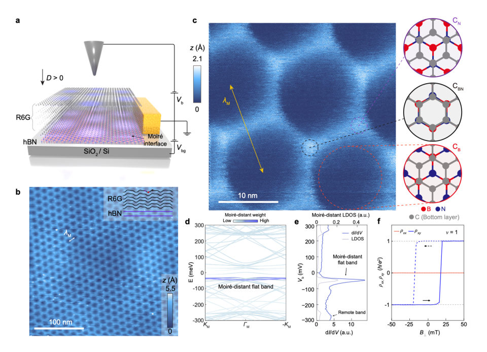
<figcaption class="paper-figure-caption"><b>Fig 1.</b> Fig. 1. Atomically resolved moiré structure in R6G/hBN. a, Schematic of our gate-tunable</figcaption>
</figure>
<figure class="paper-figure-card">
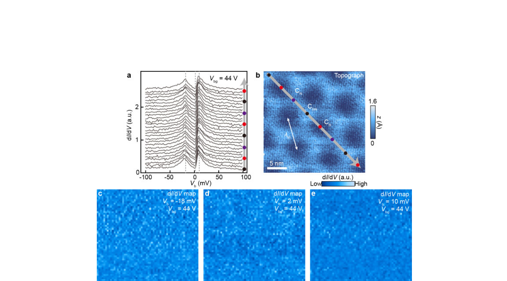
<figcaption class="paper-figure-caption"><b>Fig 2.</b> Fig. 2. Absence of moiré-distant electronic modulations in R6G/hBN D3 with θ = 1.40°. a,</figcaption>
</figure>
<figure class="paper-figure-card">
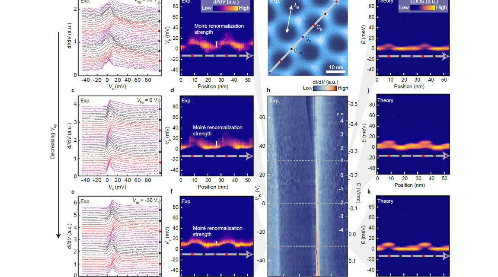
<figcaption class="paper-figure-caption"><b>Fig 3.</b> Fig. 3. Emergent flat-band renormalization in R6G/hBN D1 with θ = 0.28°. a, c &amp; e, Spatially</figcaption>
</figure>
<figure class="paper-figure-card">
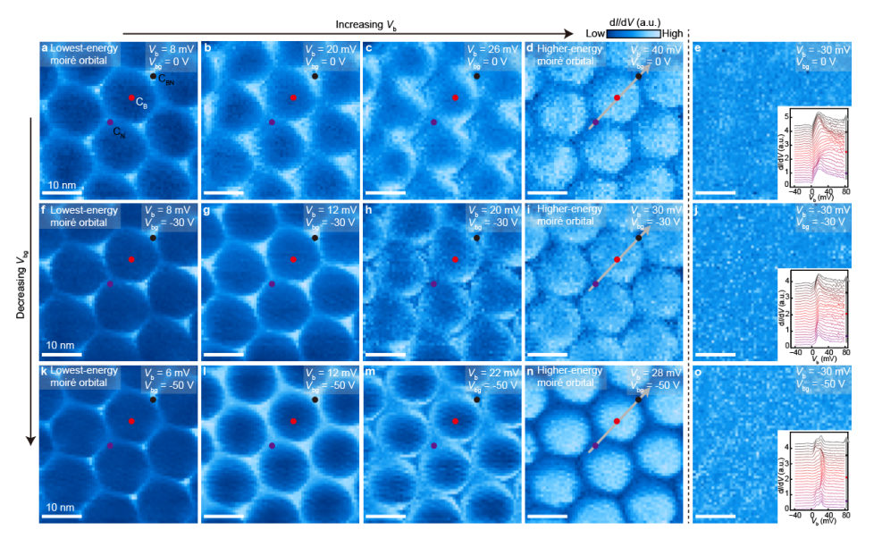
<figcaption class="paper-figure-caption"><b>Fig 4.</b> Fig. 4. Emergent trans-moiré orbitals in R6G/hBN D1 with θ = 0.28°, all taken in the same</figcaption>
</figure>
<figure class="paper-figure-card">
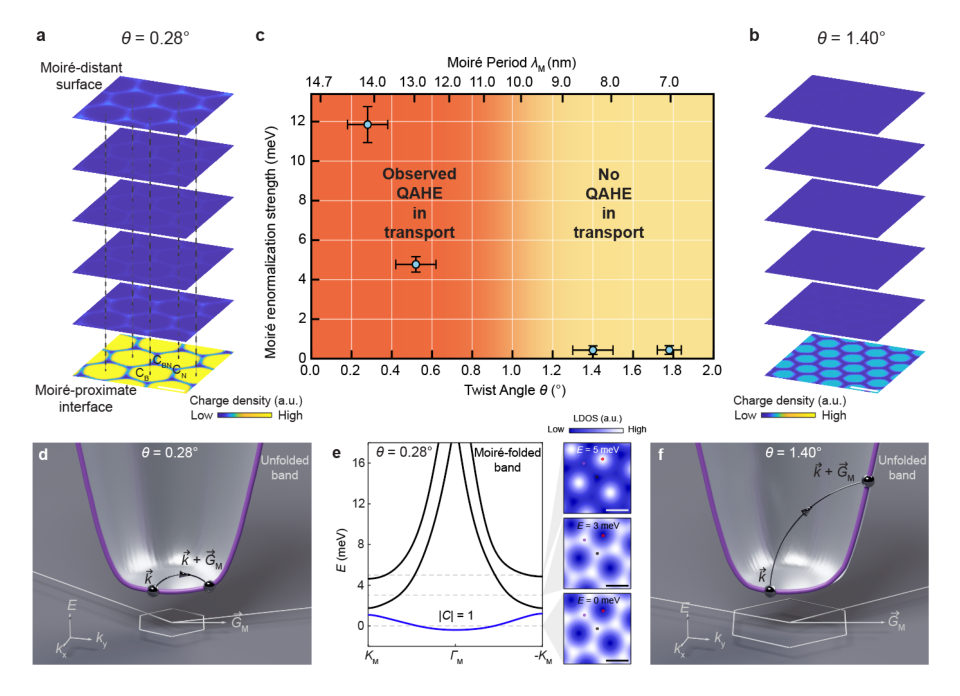
<figcaption class="paper-figure-caption"><b>Fig 5.</b> Fig. 5. Mechanism of trans-moiré-orbital and Chern-miniband formation at small θ. a-b,</figcaption>
</figure>
</div>

<p><strong>Summary.</strong> The paper reports the discovery of 'trans-moiré orbitals' in rhombohedral graphene/hBN moiré superlattices. These orbitals emerge on the side distant from the primary moiré interface and are responsible for stabilizing topological features like the FQAHE. The findings resolve a long-standing paradox by showing that electron interactions force the system into these specific, topologically active orbital states.</p>
<p><strong>Why it may be interesting.</strong> This work directly addresses emergent topological phases in moiré systems using spectroscopic measurements, which is highly relevant for understanding correlated electron behavior in engineered quantum materials.</p>
<details>
<summary>Detailed structure</summary>
<p><strong>Main problem.</strong> The study aims to resolve the microscopic mechanism behind the Fractional Quantum Anomalous Hall Effect (FQAHE) in rhombohedral graphene moiré superlattices, specifically addressing the paradox of observing a small-twist-angle interface only when electrons are kept distant from it.</p>
<p><strong>Main result.</strong> The authors discovered emergent 'trans-moiré orbitals' on the moiré-distant surface, which enforce moiré periodicity and vanish at critical twist angles ($    heta \sim 1^\circ$), providing a microscopic explanation for the topological effects observed.</p>
<p><strong>Method.</strong> The research combines Scanning Tunneling Microscopy/Spectroscopy (STM/STS) measurements with self-consistent mean-field calculations to map out the electronic structure reshaping.</p>
<p><strong>Model / system.</strong> The physical system is rhombohedral hexalayer graphene ($   ext{R6G}$) stacked on hexagonal boron nitride ($ ext{hBN}$), forming a moiré superlattice. The electronic properties are tuned by gate voltage and controlled by the moiré twist angle ($ heta$).</p>
<p><strong>Key observables.</strong> Trans-moiré orbitals (e.g., hollow-cage shape), flat-band renormalization strength, Chern minibands, and quantized Hall plateaus.</p>
<p><strong>Important parameters / regimes.</strong> Moiré twist angle ($    heta$), filling factor ($v$), and gate voltage ($V_{  ext{bg}}$).</p>
<p><strong>Assumptions / limitations.</strong> The mechanism is attributed to an interaction-driven charge-redistribution across layers, forcing electrons into these topological orbitals.</p>
<p><strong>Figures summary.</strong> Figures illustrate STM topographies and dI/dV spectra showing moiré renormalization on the distant surface for small $ heta$, contrasting with null results at large $ heta$. Simulations map these emergent orbitals to theoretical Chern minibands.</p>
<p><strong>Paper structure.</strong> The paper establishes the problem (FQAHE mechanism), presents experimental evidence via STM mapping of trans-moiré orbitals under specific twist angles, explains this emergence through interaction-driven charge redistribution, and concludes by linking this finding to a general platform for synthetic FQAHE realization.</p>
</details>
<details>
<summary>Abstract</summary>
<p>The fractional quantum anomalous Hall effect (FQAHE) exhibited in fractional Chern insulators has recently been demonstrated in twisted MoTe2 and rhombohedral graphene/hBN moiré superlattices, promising new routes toward topological quantum computation. Central to realizing this promise is the understanding of the underlying microscopic mechanism. This, however, remains elusive in the case of rhombohedral graphene, with the crux being its two seemingly paradoxical conditions: a pronounced small-twist-angle (θ) moiré interface, yet only when electrons are kept distant from it. Here, by scanning tunnelling microscopic imaging with both conditions fulfilled, we capture dramatic electronic structure reshaping in rhombohedral hexalayer graphene by unforeseen 'trans-moiré orbitals', which emerge on the other, distant side of the moiré interface but nevertheless enforce the moiré periodicity at all measured fillings. We visualize a hierarchy of spatially and energetically distinct trans-moiré orbitals which doped electrons must sequentially occupy--the lowest-energy orbital, expectedly responsible for the FQAHE at small fillings, carries a hollow-cage-like shape. Remarkably, these trans-moiré orbitals vanish at θ {\gtrsim} 1°, and so do QAHE plateaus in similar devices. Simulations reveal an interaction-driven charge-redistribution mechanism which shapes the trans-moiré orbitals and corresponding Chern minibands. With our findings providing the missing microscopic link, the paradoxical conditions find a natural explanation: electrons are not simply kept distant from a small-θ moiré interface; they are forced into topological trans-moiré orbitals, forged precisely under such conditions. Our microscopic diagnostics unlocks a wide range of possible 'synthetic' FQAHE platforms.</p>
</details>
<p><sub><a href="#top">↑ back to top</a></sub></p>

<p><a id="paper-2608.12856"></a></p>
<h3 id="phase-space-reorganization-and-travelling-wave-emergence-driven-by-non-kerr-effects-in-nonparaxial-optical-media"><a href="http://arxiv.org/abs/2608.12856v1">Phase Space Reorganization and Travelling Wave Emergence Driven by Non-Kerr Effects in Nonparaxial Optical Media</a></h3>
<p><strong>Authors:</strong> Naresh Saha, Nirmoy Kumar Das, Ashoke Das, Arnob Ray<br>
<strong>Type:</strong> theory · <strong>Category:</strong> other · <strong>PDF:</strong> <a href="https://arxiv.org/pdf/2608.12856v1">https://arxiv.org/pdf/2608.12856v1</a><br>
<strong>Analysis basis:</strong> full PDF text, analyzed in chunks
<strong>Topic relevance:</strong> <code>driven-dissipative phase transition</code> <strong>2/5</strong> · <code>non-equilibrium universality</code> <strong>2/5</strong> · <code>Frenkel-Kontorova</code> <strong>1/5</strong> · <code>Keldysh / 2PI / non-Gaussian methods</code> <strong>1/5</strong> · <code>methods for driven-dissipative</code> <strong>1/5</strong></p>
<div class="figure-strip-hint">↔ Scroll figures horizontally</div>
<div class="paper-figures-scroll">
<figure class="paper-figure-card">
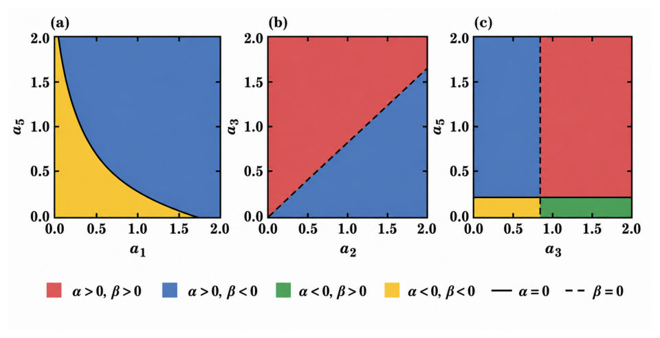
<figcaption class="paper-figure-caption"><b>Fig 1.</b> Figure 1: Parameter space diagrams illustrating the influence of the physical coefficients on the reduced Hamiltonian dynamics.</figcaption>
</figure>
<figure class="paper-figure-card">
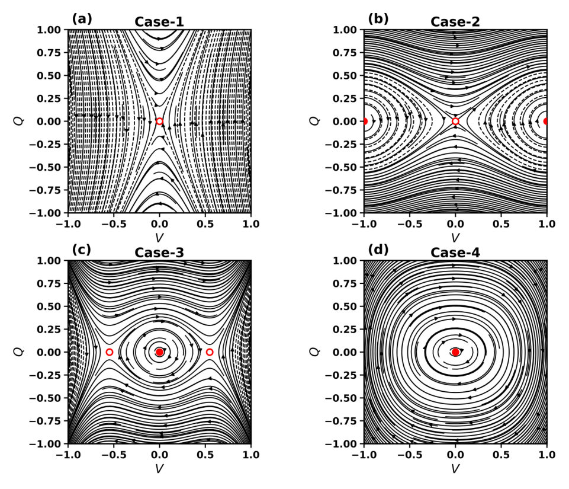
<figcaption class="paper-figure-caption"><b>Fig 2.</b> Figure 2: Representative phase portraits of the reduced planar system Eq. (6) for four sign combinations of (α, β). Each trajectory lies on an invariant Hamiltonian level set H(V, Q) = h. Saddles (red open circle) generate separatrices and organize global transitions between orbit classes, whereas centers (red filled circle) are surrounded by closed invariant curves corresponding to bounded oscillatory wave states. The representative reduced parameters are (a) α = 5.45, β = 0.4; (b) α = 0.64, β = −0.64; (c) α = −0.952, β = 3.17; (d) α = −0.55, β = −1.2.</figcaption>
</figure>
<figure class="paper-figure-card">
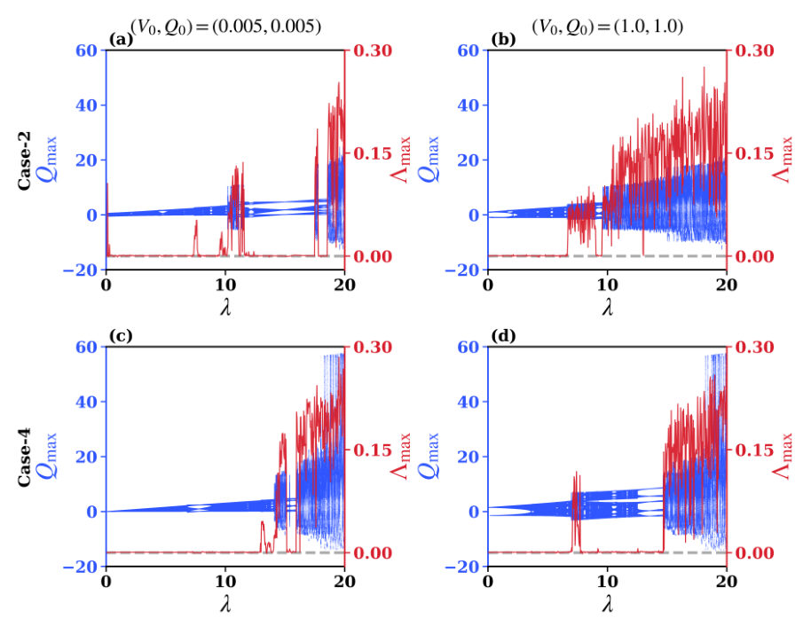
<figcaption class="paper-figure-caption"><b>Fig 3.</b> Figure 3: Bifurcation diagrams and largest Lyapunov exponent of the forced reduced system. Peak values Qmax (blue) and largest Lyapunov exponent Λmax (red) are plotted as a function of forcing amplitude λ for two representative unforced regimes, Case 2 (α = 0.64, β = −0.64, panels (a, b) and Case 4 (α = −0.55, β = −1.2, panels (c, d), with forcing frequency Γ = 2π. Panels (a, c) use the initial condition (V0, Q0) = (0.005, 0.005), while panels (b, d) use (V0, Q0) = (1.0, 1.0). The transition between regular quasiperiodic motion and irregular chaotic dynamics is identified in the bifurcation structure and confirmed by the largest Lyapunov exponent.</figcaption>
</figure>
<figure class="paper-figure-card">
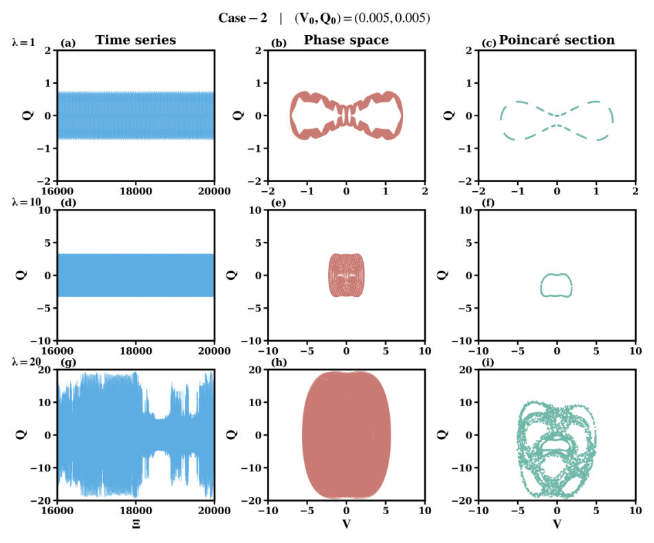
<figcaption class="paper-figure-caption"><b>Fig 4.</b> Figure 4: Panels (a), (d), and (g) show the time evolution of Q(Ξ), panels (b), (e), and (h) present the corresponding phase space projections onto the (V, Q) plane, and panels (c), (f), and (i) display the associated stroboscopic Poincaré sections. The upper, middle, and lower rows correspond to λ = 1, 10, and 20, respectively, with α = 0.64, β = −0.64, and Γ = 2π. The initial condition is (V0, Q0) = (0.005, 0.005). At low forcing amplitudes, the response remains bounded and smoothly modulated, with the phase space projections forming coherent torus-like bands. As the forcing strength increases, the oscillations become progressively irregular and the projected trajectories spread over a...</figcaption>
</figure>
<figure class="paper-figure-card">
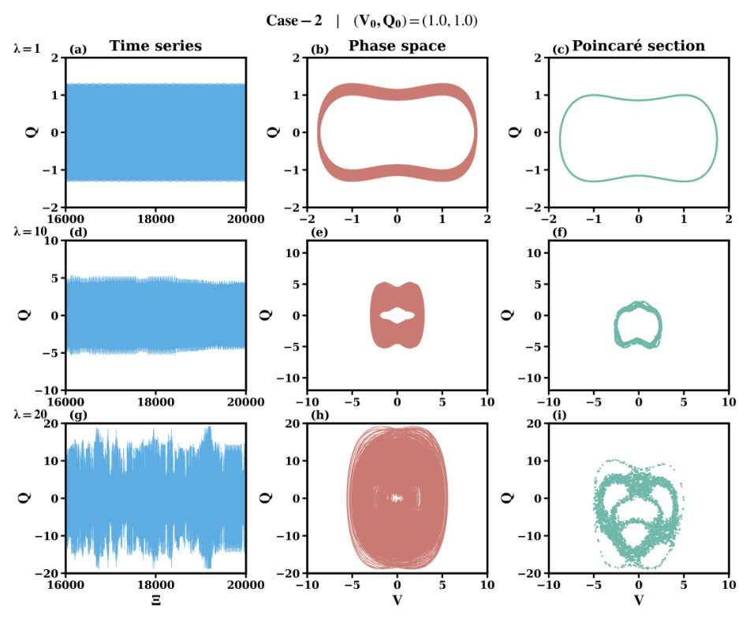
<figcaption class="paper-figure-caption"><b>Fig 5.</b> Figure 5: Panels (a), (d), and (g) show the time evolution of Q(Ξ), panels (b), (e), and (h) present the corresponding phase space projections onto the (V, Q) plane, and panels (c), (f), and (i) display the associated stroboscopic Poincaré sections. The upper, middle, and lower rows correspond to λ = 1, 10, and 20, respectively, with α = 0.64, β = −0.64, and Γ = 2π. The initial condition is (V0, Q0) = (1, 1). The same qualitative progression from regular to increasingly irregular forced dynamics is observed, although the amplitude range and geometric spread differ from Fig. 4, reflecting the influence of the initial location relative to the underlying center–saddle–center structure of the...</figcaption>
</figure>
</div>

<p><strong>Summary.</strong> This paper analyzes pulse propagation in nonparaxial optical media by reducing the governing equation to a Hamiltonian system. It demonstrates that incorporating non-Kerr nonlinearities (Self Steepening and Self Frequency Shift) fundamentally alters the phase space structure of the traveling waves. Furthermore, it characterizes the transition from regular to chaotic wave dynamics when the system is subjected to external periodic forcing.</p>
<p><strong>Why it may be interesting.</strong> This work applies advanced dynamical systems tools (Hamiltonian mechanics, bifurcation theory) to model complex wave phenomena in nonlinear optics, providing a rigorous mathematical framework for understanding how higher-order physical effects alter stable wave solutions.</p>
<details>
<summary>Detailed structure</summary>
<p><strong>Main problem.</strong> The study investigates how non-Kerr nonlinear effects, specifically self steepening (SS) and self frequency shift (SFS), fundamentally reorganize the phase space geometry and traveling wave structure in nonparaxial optical media.</p>
<p><strong>Main result.</strong> These non-Kerr effects reshape the underlying Hamiltonian dynamics; SS directly renormalizes the effective nonlinearity, while SFS constrains the admissible real travelling wave manifold. The system can also exhibit complex quasiperiodic or chaotic responses under external forcing.</p>
<p><strong>Method.</strong> The analysis involves reducing the nonlinear Helmholtz equation via a traveling wave ansatz to a planar Hamiltonian dynamical system. This is followed by phase space analysis, bifurcation theory for forced systems, and chaos diagnostics like Lyapunov exponents.</p>
<p><strong>Model / system.</strong> The model is based on the Nonlinear Helmholtz Equation (NLH) describing pulse propagation in nonparaxial optical media. The dynamics are reduced to a conservative Hamiltonian $H(V, Q)$ governing the envelope amplitude $V$ and its derivative $Q$.</p>
<p><strong>Key observables.</strong> Localized/periodic wave existence, phase space geometry (separatrices, equilibria), Largest Lyapunov Exponent ($\Lambda_{\max}$), and Poincaré section structure.</p>
<p><strong>Important parameters / regimes.</strong> The effective nonlinear coefficients $\alpha$ and $eta$, which depend on physical parameters like dispersion, nonparaxiality, Kerr nonlinearity, SS, and SFS terms.</p>
<p><strong>Assumptions / limitations.</strong> The analysis relies on applying a symmetry-guided traveling wave ansatz to reduce the NLH equation to a planar Hamiltonian system. The study also examines periodically forced extensions of this reduced system.</p>
<p><strong>Figures summary.</strong> Figures illustrate parameter space diagrams showing how varying physical coefficients determine the signs of the effective nonlinear coefficients $\alpha$ and $eta$, which govern the phase plane topology.</p>
<p><strong>Paper structure.</strong> The paper first establishes the reduction to a Hamiltonian system using traveling wave transformations. It then analyzes the resulting planar dynamics via equilibrium point classification and phase space analysis, detailing how SS and SFS modify the conserved Hamiltonian structure. Finally, it extends this analysis to periodically forced systems, employing Lyapunov exponents and Poincaré sections to map out transitions to chaos.</p>
</details>
<details>
<summary>Abstract</summary>
<p>In this article, the nonlinear Helmholtz equation with non-Kerr nonlinearity, such as self steepening and self frequency shift, is considered. A travelling wave transformation is applied, and the extended nonlinear Helmholtz equation is reduced to a Hamiltonian dynamical system. Then, the reduced Hamiltonian system is analyzed by classification of equilibrium points, phase space analysis, and the construction of exact wave solutions. The relationship between the reduced dynamical coefficients and the original physical parameters is further established through a parameter space analysis. It is shown that self steepening directly modifies the reduced dynamics, whereas self frequency shift acts through the compatibility condition for the real travelling wave reduction. Together, these non-Kerr effects reshape the phase space geometry and travelling wave structure. Localized and periodic travelling waves are obtained, with their existence determined by the balance among dispersion, nonparaxiality, Kerr nonlinearity, and non-Kerr effects. Furthermore, a periodically forced version of the reduced system is examined to study the transition from regular to irregular dynamics. It has been observed that external forcing can induce complex oscillatory behavior. Bifurcation analysis, time series evolution, phase space analysis, largest Lyapunov exponent, and Poincaré section demonstrate the emergence of quasiperiodic and chaotic responses under sufficiently strong forcing. All analytical branches are verified through full-equation residual evaluation, while a few selected branches are additionally examined through direct numerical propagation and robustness tests under complex Gaussian perturbations. The results show that self steepening directly renormalizes the effective nonlinear dynamics, whereas self frequency shift restricts the admissible real-envelope travelling wave manifold.</p>
</details>
<p><sub><a href="#top">↑ back to top</a></sub></p>

<p><a id="paper-2608.13265"></a></p>
<h3 id="topological-superconductors-in-doubly-coupled-nanowires-with-altermagnetism"><a href="http://arxiv.org/abs/2608.13265v1">Topological Superconductors in Doubly-Coupled Nanowires with Altermagnetism</a></h3>
<p><strong>Authors:</strong> Hongfa Pan, Haoyang Wang, Wenguang Zhu, Zhenhua Qiao<br>
<strong>Type:</strong> theory · <strong>Category:</strong> other · <strong>PDF:</strong> <a href="https://arxiv.org/pdf/2608.13265v1">https://arxiv.org/pdf/2608.13265v1</a><br>
<strong>Analysis basis:</strong> full PDF text, analyzed in chunks
<strong>Topic relevance:</strong> <code>Keldysh / 2PI / non-Gaussian methods</code> <strong>1/5</strong> · <code>analog quantum simulation</code> <strong>1/5</strong> · <code>quantum measurements</code> <strong>1/5</strong></p>
<div class="figure-strip-hint">↔ Scroll figures horizontally</div>
<div class="paper-figures-scroll">
<figure class="paper-figure-card">
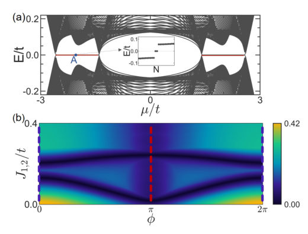
<figcaption class="paper-figure-caption"><b>Fig 1.</b> FIG. 2: (a) Energy eigenvalues as a function of chemical potential µ. Point A marks a twofold-degenerate zero-energy state, with an inset showing the eigenvalue distribution near zero energy. (b) Phase diagram in the plane of phase difference φ vs altermagnetism J1,2. Parameters are set to be t = 1, α1,2 = 0.35, ∆1 = 0.3, ∆2 = 0.15, t0 = 0.25. Additional parameters: (a) J1,2 = 0.2, φ = 0.6π, and nanowire length Nw = 200; (b) µ = −2. .</figcaption>
</figure>
<figure class="paper-figure-card">
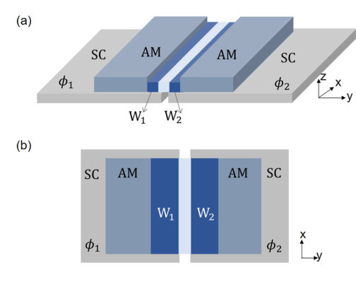
<figcaption class="paper-figure-caption"><b>Fig 2.</b> FIG. 1: (a) Side-view and (b) top-view schematics of the doubly-coupled semiconducting nanowire platform with inter-wire coupling. Two superconducting (SC) regions exhibit superconducting phases φ1 and φ2, and two altermagnetic (AM) regions are labeled accordingly. .</figcaption>
</figure>
<figure class="paper-figure-card">
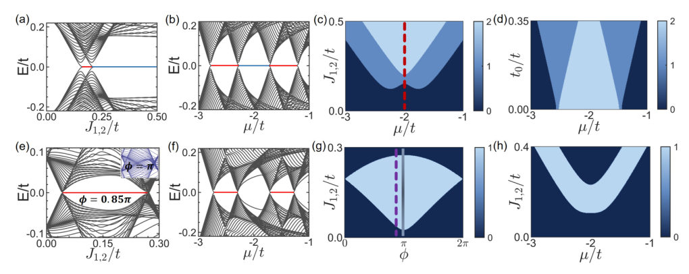
<figcaption class="paper-figure-caption"><b>Fig 3.</b> FIG. 3: (a)-(d) BDI TSCs with φ = 0: (a) Energy eigenvalues as a function of altermagnetism J1,2. (b) Energy eigenvalues as a function of the chemical potential µ. (c) The phase diagram as the function of µ and J1,2. (d) The phase diagram as the function of µ and t0. Parameters used in all calculations: t = 1, α1,2 = 0.35, ∆1 = 0.3, ∆2 = 0.2. Additional parameters: (a) µ = −2, t0 = 0.25 and nanowire length Nw = 100. (b) J1,2 = 0.3, t0 = 0.25 and nanowire length Nw = 100. (c) t0 = 0.25; (d) J1,2 = 0.3. (e)-(h) BDI TSCs with φ ̸= mπ (m = 0, 1, 2): (e) Energy eigenvalues as a function of the altermagnetism J1,2. (f) Energy eigenvalues as a function of the chemical potential µ. (g) Phase...</figcaption>
</figure>
<figure class="paper-figure-card">
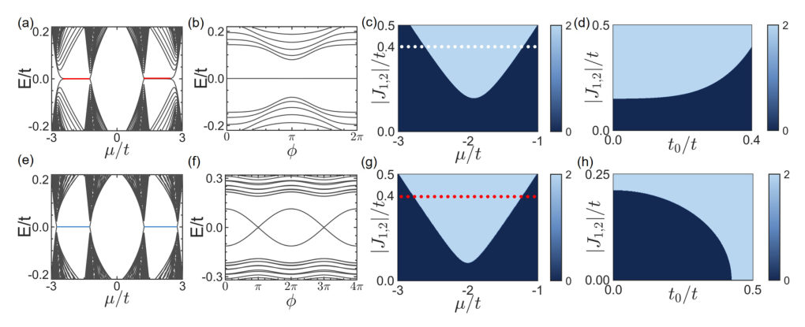
<figcaption class="paper-figure-caption"><b>Fig 4.</b> FIG. 4: (a)-(d) spin-group symmetry protected TSCs: (a) Energy eigenvalues as a function of the chemical potential µ. (b) Energy eigenvalues as a function of the phase difference φ. (c) Phase diagram as a function of µ and J1,2. (d) Phase diagram as a function of t0 and J1,2. Parameters used in all calculations: t = 1 and ∆1,2 = 0.3. Additional parameters: (a) α1,2 = 0.35, J1,2 = ±0.4, t0 = 0.2, φ = 0 and nanowire length Nw = 100; (b) µ = −2 and the other fixed parameters are same as those in (a); (c) J1 = −J2 and the fixed parameters are same as those in (a); (d) J1 = −J2, α1,2 = 0.3, µ = −2 and φ = 0. (e)-(h) Magnetic point-group symmetry protected TSCs: (e) Energy eigenvalues as a function...</figcaption>
</figure>
</div>

<p><strong>Summary.</strong> This paper theoretically explores engineering topological superconductors in doubly-coupled nanowires that combine proximity superconductivity and altermagnetism. By tuning parameters like the superconducting phase difference ($\varphi$) and magnetic couplings ($J_{1,2}$), the authors demonstrate the realization of multiple robust TSC phases, including those hosting protected Majorana zero modes. This work provides a versatile platform for designing topological quantum materials.</p>
<p><strong>Why it may be interesting.</strong> This work provides a concrete theoretical blueprint for realizing exotic superconducting states by combining magnetic order (altermagnetism) with superconductivity in low-dimensional structures, which is highly relevant to condensed matter theory involving symmetry protection.</p>
<details>
<summary>Detailed structure</summary>
<p><strong>Main problem.</strong> The study theoretically investigates how topological superconductivity (TSC) can be engineered in a novel platform: doubly-coupled nanowires that integrate proximity-induced superconductivity and altermagnetism.</p>
<p><strong>Main result.</strong> The system was shown to host four distinct TSC phases, including classes D and BDI, with the ability to realize robust Majorana zero modes protected by specific spin-group or magnetic point-group symmetries.</p>
<p><strong>Method.</strong> The analysis uses a tight-binding model Hamiltonian solved via Bogoliubov–de Gennes formalism in momentum space, characterizing topological states using symmetry classes and winding numbers.</p>
<p><strong>Model / system.</strong> The physical system is a doubly-coupled semiconducting nanowire platform incorporating superconducting (SC) regions and altermagnetic (AM) regions. The model Hamiltonian $H = H_{w1} + H_{w2} + H_{int}$ describes the coupled two-band superconductor.</p>
<p><strong>Key observables.</strong> Topological phase transitions marked by bulk gap closing, the presence of Majorana zero modes (MZMs) at boundaries, and the topological invariant Z.</p>
<p><strong>Important parameters / regimes.</strong> Tunable parameters include the superconducting phase difference ($\varphi$), inter-wire coupling ($t_0$), chemical potential ($\mu$), and altermagnetism strengths ($J_{1,2}$).</p>
<p><strong>Assumptions / limitations.</strong> The analysis assumes proximity coupling to superconductors and altermagnets, and relies on controlling multiple symmetry parameters.</p>
<p><strong>Figures summary.</strong> Figures illustrate schematics of the coupled nanowire platform, energy eigenvalues showing zero-energy states (MZMs), and phase diagrams mapping out topological regimes based on $\varphi$ and $J_{1,2}$.</p>
<p><strong>Paper structure.</strong> The paper progresses from identifying the physical challenge to deriving the Hamiltonian, analyzing how symmetry dictates the topological class (D vs BDI), and finally detailing the tunability of these phases using specific parameter controls.</p>
</details>
<details>
<summary>Abstract</summary>
<p>We theoretically investigate the possibility of engineering topological superconductivity in doubly coupled nanowires integrating proximity-induced superconductivity and altermagnetism. By tuning experimentally accessible parameters, we find four distinct topological superconducting phases: class D, class BDI, and two phases hosting two Majorana zero modes per end, protected respectively by spin-group and magnetic point-group symmetries. Beyond inheriting the advantages of alternating?magnetism induced topological superconductivity, our system provides multiple tuning knobs (e.g., superconducting phase difference and inter-wire coupling) to control topological properties.</p>
</details>
<p><sub><a href="#top">↑ back to top</a></sub></p>

<p><a id="paper-2608.13540"></a></p>
<h3 id="insight-into-srf-cavity-performance-from-simulations-of-nbs-surface-oxide-dissolution-and-diffusion"><a href="http://arxiv.org/abs/2608.13540v1">Insight into SRF cavity performance from simulations of Nb's surface oxide dissolution and diffusion</a></h3>
<p><strong>Authors:</strong> Ryan M. L. McFadden, Rowan Becker, Tobias Junginger<br>
<strong>Type:</strong> theory · <strong>Category:</strong> other · <strong>PDF:</strong> <a href="https://arxiv.org/pdf/2608.13540v1">https://arxiv.org/pdf/2608.13540v1</a><br>
<strong>Analysis basis:</strong> full PDF text, analyzed in chunks
<strong>Topic relevance:</strong> <code>Keldysh / 2PI / non-Gaussian methods</code> <strong>1/5</strong></p>
<div class="figure-strip-hint">↔ Scroll figures horizontally</div>
<div class="paper-figures-scroll">
<figure class="paper-figure-card">
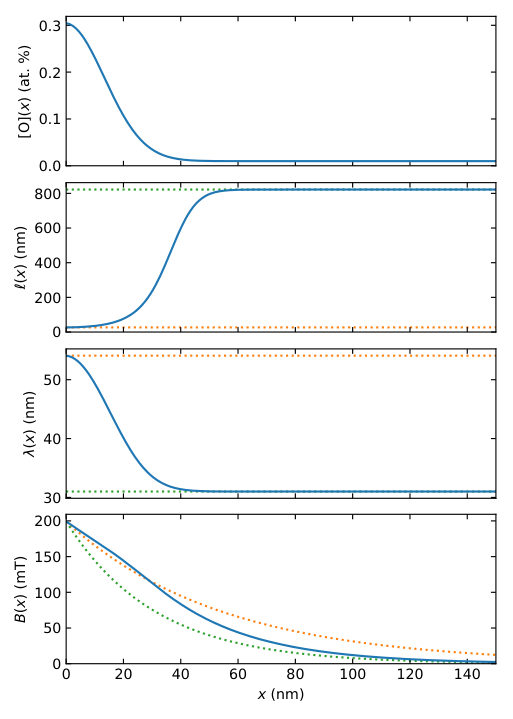
<figcaption class="paper-figure-caption"><b>Fig 1.</b> FIG. 1. Simulated oxygen defect profile [O] as a function of depth 𝑥for a vacuum annealing treatment at 125 ◦C for 8 h. The simulations and derived quantities make use of the parameters tabulated in Table I. The spatial form of the corresponding electron mean-free-path ℓ[Equa- tions (21) and (22)], magnetic penetration depth 𝜆[Equations (23) to (25)], and Meissner screening profile 𝐵(𝑥) [Equation (30)] are also shown, revealing surface-localized inhomogeneities resulting from [O](𝑥). For comparison, “clean” and “dirty” limits for the latter quantities, identified from ℓ’s asymptotic limits, are shown as dotted green and orange lines, respectively.</figcaption>
</figure>
<figure class="paper-figure-card">
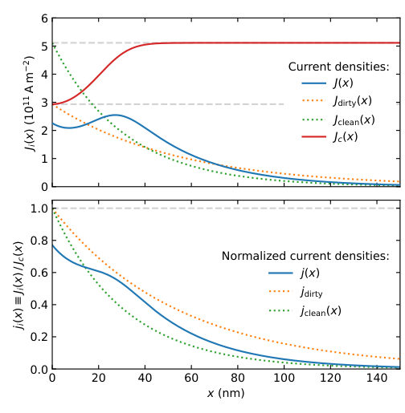
<figcaption class="paper-figure-caption"><b>Fig 2.</b> FIG. 2. Supercurrent density 𝐽as a function of depth 𝑥, derived from simulations of a vacuum annealing treatment at 125 ◦C for 8 h (see Figure 1) using Equation (31). For comparison, the spatial form for both “clean” and “dirty” limits are shown as dotted green and orange lines, respectively, as well as Nb’s critical current density 𝐽𝑐 [Equation (32)], which sets the limit for maintaining the Meissner state. Notice that this baking treatment modifies 𝐽so that its maximum coincides with the increase in 𝐽𝑐deeper below the surface. The fractional reduction in 𝐽relative to 𝐽𝑐, represented by the quantity 𝑗, is shown on the bottom panel to emphasize the benefit of the treatment.</figcaption>
</figure>
<figure class="paper-figure-card">
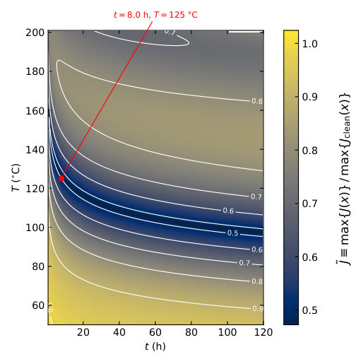
<figcaption class="paper-figure-caption"><b>Fig 3.</b> FIG. 3. Ratio of the maximum supercurrent density in treated Nb relative to its “clean” value ˜𝐽[Equation (33)], shown for different annealing temperatures 𝑇and times 𝑡. ˜𝐽varies strongly with 𝑡and 𝑇, revealing a “valley” where it is minimized. The position of the 8 h, 125 ◦C treatment used in Figures 1 and 2 is indicated, appearing near the bottom of the “valley.”</figcaption>
</figure>
<figure class="paper-figure-card">
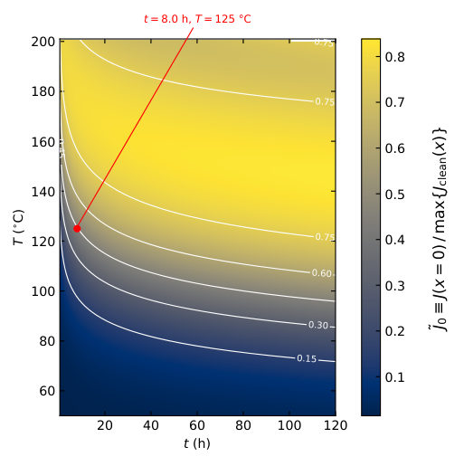
<figcaption class="paper-figure-caption"><b>Fig 4.</b> FIG. 4. Ratio of the maximum surface supercurrent density in treated Nb relative to its “clean” value ˜𝐽0 [Equation (34)], shown for different annealing temperatures 𝑇and times 𝑡. ˜𝐽0 varies systematically with 𝑡 and 𝑇, generally increasing for ascending 𝑡and 𝑇values. The position of the 8 h, 125 ◦C treatment used in Figures 1 and 2 is indicated.</figcaption>
</figure>
<figure class="paper-figure-card">
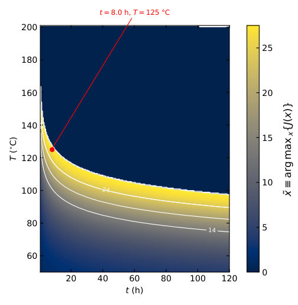
<figcaption class="paper-figure-caption"><b>Fig 5.</b> FIG. 5. Position of the maximum supercurrent density in treated Nb ˜𝑥[Equation (35)], shown for different annealing temperatures 𝑇 and times 𝑡. ˜𝑥varies strongly with 𝑡and 𝑇, revealing a “cliff” where it is maximized. The position of the 8 h, 125 ◦C treatment used in Figures 1 and 2 is indicated, appearing near the top of the “cliff”.</figcaption>
</figure>
</div>

<p><strong>Summary.</strong> The research simulates how oxygen diffusing into Niobium's surface layer during vacuum annealing affects its superconducting properties. By solving reaction-diffusion equations, the authors predict that this doping profile alters the magnetic screening current distribution. This establishes a quantitative framework linking controlled surface chemistry to the operational performance of critical SRF cavity components.</p>
<p><strong>Why it may be interesting.</strong> This work provides a crucial quantitative bridge between solid-state chemistry (defect diffusion) and applied superconductivity physics relevant for accelerator technology, which is highly valuable for understanding material limitations in quantum hardware components.</p>
<details>
<summary>Detailed structure</summary>
<p><strong>Main problem.</strong> The primary goal is to quantitatively link oxygen doping, resulting from surface oxide dissolution and diffusion in Niobium (Nb), to the superconducting performance of Nb Superconducting Radio Frequency (SRF) cavities.</p>
<p><strong>Main result.</strong> Oxygen doping significantly modifies the near-surface current distribution by reducing the surface screening current and shifting its maximum several nanometers into the bulk material.</p>
<p><strong>Method.</strong> The study uses numerical simulation of a 1D reaction-diffusion process, solving for oxygen concentration profiles over time and temperature ranges. These profiles are then used to calculate resulting superconducting properties like the Meissner screening current and critical supercurrent density.</p>
<p><strong>Model / system.</strong> The physical system is Nb metal undergoing chemical doping by interstitial oxygen during vacuum annealing treatments. The modeling involves a reaction-diffusion equation coupled with electrodynamics (London/Ginzburg-Landau theory) to predict macroscopic superconducting response from microscopic defect profiles.</p>
<p><strong>Key observables.</strong> Oxygen concentration profile <a href="x, t">O</a>, Meissner screening current distribution J(x), magnetic penetration depth $\lambda(T, x, B_0)$, and critical supercurrent density $J_c$.</p>
<p><strong>Important parameters / regimes.</strong> Treatment temperatures ($50^\circ	ext{C}$ to $200^\circ	ext{C}$) and times ($0.5 	ext{h}$ to $120 	ext{h}$). The diffusion coefficient $D$ and rate constants follow Arrhenius dependencies.</p>
<p><strong>Assumptions / limitations.</strong> The dissolution process is treated as irreversible, step-wise reactions, and the oxygen source term for diffusion is approximated as a localized surface plane source.</p>
<p><strong>Figures summary.</strong> Figures illustrate simulated profiles of $[	ext{O}](x)$, $\ell$, $B(x)$, and $J(x)$ across various annealing times and temperatures, comparing results to idealized 'clean' and 'dirty' limits.</p>
<p><strong>Paper structure.</strong> The paper follows a logical progression: first modeling the chemical process (dissolution via rate equations), then simulating the resulting diffusion profile using reaction-diffusion equations, and finally calculating the macroscopic electromagnetic response (Meissner screening/supercurrent) based on that profile.</p>
</details>
<details>
<summary>Abstract</summary>
<p>We report simulations of the dissolution and diffusion of Nb's surface oxide layer in vacuum. While this chemical doping process is important for the surface preparation of Nb superconducting radio frequency (SRF) cavities - common components of particle accelerators - quantitatively linking the resulting oxygen distributions to superconducting performance remains challenging. In this work, we simulate the reaction-diffusion process numerically for treatment temperatures $T = 50^{\circ}$C to $200^{\circ}$C and times $t = 0.5$ h to $120$ h, and calculate the effect of the spatially inhomogeneous oxygen doping on Nb's superconducting properties. We find that oxygen doping redistributes the Meissner screening current, reducing its value at the surface and shifting its maximum several nanometres into the material. These results provide a microscopic link between oxygen diffusion profiles and the electromagnetic response of Nb relevant for SRF cavity operation. This work provides a quantitative framework linking oxygen diffusion profiles to superconducting performance and establishes a foundation for future studies involving time-dependent and multi-step heat treatment protocols.</p>
</details>
<p><sub><a href="#top">↑ back to top</a></sub></p>
<h3 id="other-secondary-papers-1">Other secondary papers (1)</h3>
<details>
<summary>Show other secondary papers</summary>

<p><a id="paper-2608.13011"></a></p>
<h3 id="exploring-the-unknown-territory-of-dromions-of-21-dimensional-generalized-nonlinear-schrodinger-equation"><a href="http://arxiv.org/abs/2608.13011v1">Exploring the unknown territory of Dromions of (2+1) dimensional Generalized Nonlinear Schrodinger Equation</a></h3>
<p><strong>Authors:</strong> C. Senthil Kumar, R. Radha<br>
<strong>Type:</strong> theory · <strong>Category:</strong> other · <strong>PDF:</strong> <a href="https://arxiv.org/pdf/2608.13011v1">https://arxiv.org/pdf/2608.13011v1</a><br>
<strong>Analysis basis:</strong> full PDF text, analyzed in chunks</p>
<div class="figure-strip-hint">↔ Scroll figures horizontally</div>
<div class="paper-figures-scroll">
<figure class="paper-figure-card">
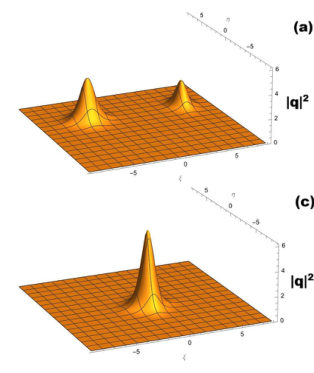
<figcaption class="paper-figure-caption"><b>Fig 1.</b> Fig. 1: Snapshots of two dromion solution at (a) t=-4 (b) t=-2 (c) t=0 (d) t=4 indicating a firewall at the boundary and reflection at the origin undergoing inelastic collision</figcaption>
</figure>
<figure class="paper-figure-card">
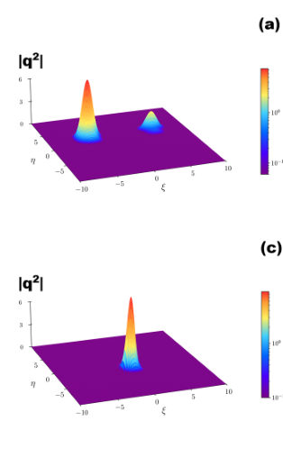
<figcaption class="paper-figure-caption"><b>Fig 2.</b> Fig. 2: Numerically simulated density profile of two dromions at (a) t=-4 (b) t=-2 (c) t=0 (d) t=4 indicating a firewall at the boundary and reflection at the origin besides undergoing inelastic collision</figcaption>
</figure>
<figure class="paper-figure-card">
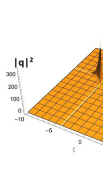
<figcaption class="paper-figure-caption"><b>Fig 3.</b> Fig. 3: Snapshot of the singular solution for the choice c1 = −2; l1 = 1; a1 = 1; n1 = −1; d1 = 0; l2 = 1; a2 = 1.5; n2 = 2; d2 = 0; m2 = 1; l4 = 1; b = 1; p1 = 1; r1 = 1; λ = 1</figcaption>
</figure>
<figure class="paper-figure-card">
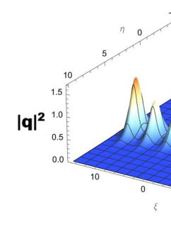
<figcaption class="paper-figure-caption"><b>Fig 4.</b> Fig. 4: Uneven distribution of energy of dromions by giving equal inputs to all the bound states, l1 = 1; a1 = 1; n1 = 1; d1 = 0; l2 = 1; a2 = 1; n2 = 2; d2 = 0; l3 = 1; a3 = 1; n3 = 3; d3 = 0; l4 = 1; a4 = 1; n4 = −1; d4 = 0; l5 = 1; a5 = 1; n5 = −2; d5 = 0; l6 = 1; a6 = 1; n6 = −3; d6 = 0; l7 = 1; a7 = 1; n7 = −4; d7 = 0; k1 = 1; m1 = 1; b1 = 1; p1 = 1; r1 = 1; λ = 0.01; t = −4; c1 = −15</figcaption>
</figure>
<figure class="paper-figure-card">
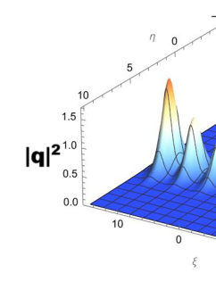
<figcaption class="paper-figure-caption"><b>Fig 5.</b> Fig. 5: Energy distribution by giving equal inputs except for one bound state, l1 = 1; a1 = 1; n1 = 1; d1 = 0; l2 = 1; a2 = 1; n2 = 2; d2 = 0; l3 = 1; a3 = 1; n3 = 3; d3 = 0; l4 = 1; a4 = 1; n4 = −1; d4 = 0; l5 = 2; a5 = 1; n5 = −2; d5 = 0; l6 = 1; a6 = 1; n6 = −3; d6 = 0; l7 = 1; a7 = 1; n7 = −4; d7 = 0; k1 = 1; m1 = 1; b1 = 1; p1 = 1; r1 = 1; λ = 0.01; t = −4; c1 = −15</figcaption>
</figure>
</div>
<p><strong>Summary.</strong> This paper investigates dromion solutions for a generalized nonlinear Schrödinger equation in two spatial dimensions, utilizing the Painlevé expansion method. It uncovers several novel, universal attributes of these localized structures, such as boundary reflections and non-uniform energy sharing among multiple interacting solitons. These findings suggest deep underlying physics applicable to fields like nonlinear optics and plasma dynamics.</p>
<p><strong>Why it may be interesting.</strong> The study's focus on robust, universal physical signatures (like firewalls or non-uniform energy sharing) in integrable PDEs is highly relevant to theoretical physics exploring complex wave phenomena in optics and plasma physics. The connection to soliton interactions provides a rich mathematical framework for modeling many-body quantum dynamics.</p>
<details>
<summary>Detailed structure</summary>
<p><strong>Main problem.</strong> The paper aims to explore novel properties of dromion solutions by investigating a generalized (2+1) dimensional Nonlinear Schrödinger Equation (GNLS). It seeks to uncover attributes beyond those previously documented for these localized wave structures.</p>
<p><strong>Main result.</strong> The study reveals universal properties of dromions, including the existence of 'firewall' and reflection at boundaries, uneven energy distribution among bound states, and amplitude dependence on neighboring dromions. These effects are confirmed across multiple nonlinear systems.</p>
<p><strong>Method.</strong> The primary mathematical tool employed is the Truncated Painlevé Expansion method to derive closed-form solutions for the complex partial differential equation. Numerical simulations were used extensively to corroborate analytical findings.</p>
<p><strong>Model / system.</strong> The core model is a generalized (2+1) dimensional Nonlinear Schrödinger Equation, which integrates aspects of Davey-Stewartson equations. The analysis focuses on finding and characterizing dromion solutions within this framework.</p>
<p><strong>Key observables.</strong> Dromion density profile ($|q|^2$), energy distribution among bound states, phase shifts during collision, and amplitude changes upon removal of neighboring components.</p>
<p><strong>Important parameters / regimes.</strong> The coupling constant $\lambda$, and parameters controlling the functional forms derived from the Painlevé analysis ($\phi_1, \phi_2$).</p>
<p><strong>Assumptions / limitations.</strong> The method relies on the assumption that the system can be analyzed via the Truncated Painlevé approach, which is limited to integrable (2+1) dimensional PDEs.</p>
<p><strong>Figures summary.</strong> Figures illustrate snapshots and density profiles confirming inelastic collisions, firewall effects, and reflection for two dromions. Other figures demonstrate how removing specific dromion components causes a measurable decrease in the overall cluster amplitude, suggesting nonlinear coupling.</p>
<p><strong>Paper structure.</strong> The paper first introduces the generalized GNLS equation and applies the Painlevé approach to derive general solution forms. It then analyzes multi-dromion solutions (two-dromion, seven-dromion) by setting specific functional forms for the components. Finally, it systematically demonstrates the universal nature of observed properties—such as energy distribution control and amplitude dependence—by comparing results across various nonlinear systems.</p>
</details>
<details>
<summary>Abstract</summary>
<p>In this paper, we travel through an unknown territory of dromions, to unearth and show the new properties/attributes of dromions which have never been brought to the fore since they were first discovered by Boiti etal [1]. These new attributes are brought out by investigating a generalized (2+1) dimensional Nonlinear Schrodinger (NLS) equation by exploiting Truncated Painleve approach. The signatures that can be attributed to dromions include existence of firewall and reflection at the boundary, uneven distribution of energy among different bound states, amplitude dependence on adjacent dromions, etc. We have corroborated the main analytical results with numerical simulations also. We categorically state that these properties are universal and can be extracted in any (2+1) dimensional nonlinear partial differential equation. We do believe that these properties which shed more light on the behaviour of dromions may have wider repercussions in nonlinear optics, Bose-Einstein condensates and plasma physics.</p>
</details>
<p><sub><a href="#top">↑ back to top</a></sub></p>
</details>

<hr>
<p>
<a href="index.html">← Index</a>
 · <a href="papers_05.html">← Previous</a>
</p>
<hr>

</body>
</html>
